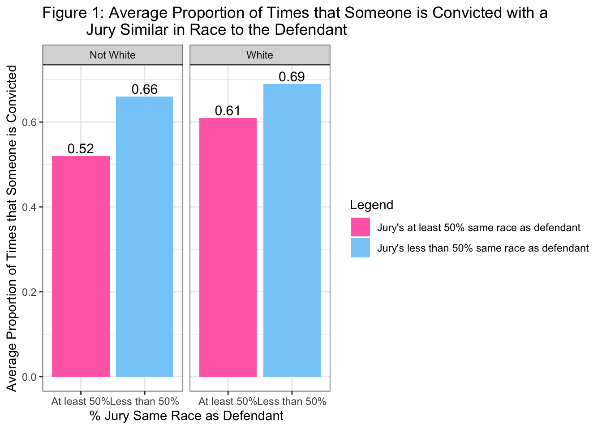

Here is some of my work in R Studio!
Portfolio
Introduction to Data Science
Introduction to Data Science
Problem Set 1
Question 1a
state <- c(1, 2, 3, 4, 5)
pop <- c(12.80, 19.45, 3.56, 0.97, 8.88)
cases <- c(139623, 439238, 52095, 17857, 196337)The first vector, state, is created using the concatenate function to combine the five states within the data set (state 1, 2, 3, 4, and 5). The second vector, pop, is created using the concatenate function to combine the populations for those five states (12.80, 19.45, 3.56, 0.97, 8.88). The third vector, cases, is created using the concatenate function to combine the numbers of cases for the five states within the data set (139623, 439238, 52095, 17857, 196337). Now, these three vectors store all of the data on COVID-19 for five northeastern states as provided within the data table.
Question 1b
ne.covid <- cbind(state, pop, cases)
ne.covid## state pop cases
## [1,] 1 12.80 139623
## [2,] 2 19.45 439238
## [3,] 3 3.56 52095
## [4,] 4 0.97 17857
## [5,] 5 8.88 196337The object ne.covid was created by combining the three columns (state, population, cases) from the data set into a matrix. The function cbind was implemented and assigned to ne.covid. Once created, running ne.covid displays the same data table but in R.
Question 1c
mean(ne.covid[,2])## [1] 9.132median(ne.covid[,2])## [1] 8.88max(ne.covid[,2])## [1] 19.45min(ne.covid[,2])## [1] 0.97The mean of the second column of ne.covid is 9.132, the median is 8.88, the maximum is 19.45, and the minimum is 0.97.
Question 1d
mean(ne.covid[,3])## [1] 169030median(ne.covid[,3])## [1] 139623max(ne.covid[,3])## [1] 439238min(ne.covid[,3])## [1] 17857The mean of the third column of ne.covid is 169030, the median is 139623, the maximum is 439238, and the minimum is 17857.
Question 1e
#creating a vector for state population in thousands
pop.in.1000s <- pop*1000
#creating a vector for covid-19 cases per 1000 residenrs
cases.per.1000 <- cases /pop.in.1000sThe vector cases.per.1000 is created by assigning the result of the cases divided by 1000 to the vector. This vector represents the number of COVID-19 cases in each state per 1000 residents.
Question 1f
state_chr <- c("PA", "NY", "CT", "DE", "NJ")
plot(y=cases.per.1000, x=pop, xlab = "Population in Millions", ylab = "Cases per 1000 Residents", main = "COVID-19 in the Northeast", type = "n")
plot(y=cases.per.1000, x=pop, xlab = "Population in Millions", ylab = "Cases per 1000 Residents", main = "COVID-19 in the Northeast", text(x = pop, y = cases.per.1000, labels = state_chr)) The scatterplot “COVID-19 in the Northeast” was created by using the plot function. Within the plot, y is designated as cases.per.1000, x is designated as population in millisons, the x-axis is labeled population with the xlab function, and the y-axis is labeled Cases per 1000 Residents with the ylab function. The title is created with the main function, and is labeled COVID-19 in the Northeast. The states are assigned to their corresponding dot on the scatterplot with the text function.
The scatterplot “COVID-19 in the Northeast” was created by using the plot function. Within the plot, y is designated as cases.per.1000, x is designated as population in millisons, the x-axis is labeled population with the xlab function, and the y-axis is labeled Cases per 1000 Residents with the ylab function. The title is created with the main function, and is labeled COVID-19 in the Northeast. The states are assigned to their corresponding dot on the scatterplot with the text function.
Question 1g
#adding cases.per.1000 and state_chr as columns to the ne.covid matrix
ne.covid <- cbind(ne.covid, cases.per.1000, state_chr)
#subsetting to identify the state most affected by COVID 19
ne.covid[ne.covid[, "cases.per.1000"] == max(cases.per.1000), c("state_chr", "cases.per.1000")]## state_chr cases.per.1000
## "NY" "22.5829305912596"#subsetting to identify the state least affected by COVID 19
ne.covid[ne.covid[, "cases.per.1000"] == min(cases.per.1000), c("state_chr", "cases.per.1000")]## state_chr cases.per.1000
## "PA" "10.908046875"New York has been the most affected by COVID-19, with around 22.58 cases per 1000 residents. Pennsylvania has been the least affceted by COVID-19, with about 10.91 cases per 1000 residents.
Question 1h If I could get one more piece of information about COVID-19 to describe how affected each of these states are, it would be the death rates. The death rates would signify the level of impact COVID-19 had on the states, as some people within the cases category may be asymptomatic or have mild symptoms and are okay now.
Question 2a
load("/Users/briannafisher/Dropbox/Github/BriannaFisher/data/2019MLBTeamsData.Rdata")
bb$avgattpergame <- as.numeric(bb$home.attendance/bb$games.played)
median(bb$avgattpergame)## [1] 14055.35max(bb$avgattpergame)## [1] 24532.77min(bb$avgattpergame)## [1] 5008.037Because there are an even number of teams, no singular team had the median average attendance of 14055.35 but the two in the middle were the Washington Nationals (with a median average attendance of 13949.27) and the Minnesota Twins (with a median average attendance of 14161.43). The team with the maximum average attendance per game was the Los Angeles Dodgers, with a maximum of 24532.77. The team with the minimum average attendance per game was the Miami Marlins, with a minimum of 5008.037.
Question 2b
bb$teambattavg <- as.numeric(bb$hits/bb$at.bats)
median(bb$teambattavg)## [1] 0.2492307max(bb$teambattavg)## [1] 0.2740068min(bb$teambattavg)## [1] 0.2364828Because there are an even number of teams, no singular team had the median team batting average of 0.2492307 but the two in the middle were the Oakland Athletics (with a median team batting average of 0.2488761) and the Cleveland Indians (with a median team batting average of 0.2495853). The team with the maximum batting average is the Houston Astros with a maximum of 0.2740068. The team with the minimum batting average is the Toronto Blue Jays with a minimum of 0.2364828.
Question 2c
plot(y=bb$avgattpergame, x=bb$teambattavg, xlab = "Team Batting Average",
ylab = "Average Attendance Per Game", main = "MLB 2019 Data") The graph looks very spread out, with the dots in seemingly randomly places. It is fairly nonlinear with no clear direction or association. The graph tells you that there is no relationship between team skill and attendance.
The graph looks very spread out, with the dots in seemingly randomly places. It is fairly nonlinear with no clear direction or association. The graph tells you that there is no relationship between team skill and attendance.
Question 2d
bb$runs.pitch <- as.numeric(bb$opponent.runs/bb$outs.pitched)
plot(y=bb$avgattpergame, x=bb$runs.pitch, xlab = "Opponent Runs per Outs Pitched",
ylab = "Average Attendance Per Game", main = "MLB 2019 Data 2") The graph looks like the lower the opponent runs per outs pitched, the higher the average attendance per game. The same is for the opposite, the lower the average attendance per game, the higher the opponent runs per outs pitched. There are some outliers, though, that do not fit the pattern. This tells you that while there is not a linear relationship between team skill and attendance, there is an association between the two.
The graph looks like the lower the opponent runs per outs pitched, the higher the average attendance per game. The same is for the opposite, the lower the average attendance per game, the higher the opponent runs per outs pitched. There are some outliers, though, that do not fit the pattern. This tells you that while there is not a linear relationship between team skill and attendance, there is an association between the two.
Question 2e
bb$teamwinper <- as.numeric(bb$wins/bb$games.played)
plot(y=bb$teamwinper, x=bb$teambattavg, xlab = "Team Batting Average",
ylab = "Team Winning Percentage", main = "MLB 2019 Data 3") The graph looks more linear than the other two, with team winning percentage increasing as team batting average increases. This tells you that there is a positive relationship between team batting average and team winning percentage.
The graph looks more linear than the other two, with team winning percentage increasing as team batting average increases. This tells you that there is a positive relationship between team batting average and team winning percentage.
Question 2 Bonus
prediction <- lm(formula = teamwinper ~ teambattavg, data = bb)
plot(bb$teamwinper ~ bb$teambattavg, xlab = "Team Batting Average",
ylab = "Team Winning Percentage", main = "MLB 2019 Data 3")
abline(prediction)To make a better prediction of a team’s winning percentage, the least squares regression line can be calculated and plotted in order to show where the predicted values would lie. This line is used to predict the value of y, or team winning percentage, for any value of x, or team batting average.
Question 3a
recentgrads <- read.csv("/Users/briannafisher/Dropbox/Github/BriannaFisher/data/recentgrads.csv", header = TRUE, na="NA")
ncol(recentgrads)## [1] 15nrow(recentgrads)## [1] 173There are 15 columns and 173 rows in the “recentgrads” data set. The unit of analysis of the data is major, as the data focuses on the jobs college graduates received depending on their major.
Question 3b
table(recentgrads$Major_category)##
## Agriculture & Natural Resources Arts
## 10 8
## Biology & Life Science Business
## 14 13
## Communications & Journalism Computers & Mathematics
## 4 11
## Education Engineering
## 16 29
## Health Humanities & Liberal Arts
## 12 15
## Industrial Arts & Consumer Services Interdisciplinary
## 7 1
## Law & Public Policy Physical Sciences
## 5 10
## Psychology & Social Work Social Science
## 9 9There are 16 different major categories that the data are divided into. The engineering category has the most majors, with 29 different majors.
Question 3c
sum(recentgrads$Women, na.rm = T)## [1] 3895228percentwomen <- sum(recentgrads$Women, na.rm = T)/sum(recentgrads$Total, na.rm = T)
percentwomen * 100## [1] 57.52255There are 3,895,228 women included in the dataset. 57.52% of the people in the dataset are women.
Question 3d
recentgrads$womengrads <- as.numeric(recentgrads$Women/recentgrads$Total)
order(recentgrads$womengrads, na.last = T)## [1] 74 67 27 2 4 9 1 107 112 12 6 3 51 53 82 15 29 10
## [19] 11 66 21 26 76 20 46 39 32 18 43 54 25 44 72 23 85 113
## [37] 14 16 111 64 34 28 24 144 36 5 31 17 19 37 106 108 73 80
## [55] 159 33 136 65 142 63 70 38 48 58 13 7 148 42 115 59 86 77
## [73] 95 90 79 103 140 75 147 118 83 68 41 47 84 126 8 69 123 30
## [91] 98 55 122 133 81 93 161 60 91 62 134 124 143 78 102 168 61 57
## [109] 169 109 131 71 128 121 117 167 150 94 88 97 145 137 141 50 166 96
## [127] 158 138 92 163 49 125 100 160 127 120 162 116 130 154 87 40 153 45
## [145] 99 132 105 110 135 146 119 172 156 171 155 114 170 149 56 104 129 173
## [163] 89 35 152 157 101 151 139 52 164 165 22recentgrads[74,]## Major_code Major Total Men Women
## 74 3801 MILITARY TECHNOLOGIES 124 124 0
## Major_category Employed Full_time Part_time
## 74 Industrial Arts & Consumer Services 0 111 0
## Full_time_year_round Unemployed Unemployment_rate Median P25th P75th
## 74 111 0 0 40000 40000 40000
## womengrads
## 74 0order(recentgrads$womengrads, na.last = F)## [1] 22 74 67 27 2 4 9 1 107 112 12 6 3 51 53 82 15 29
## [19] 10 11 66 21 26 76 20 46 39 32 18 43 54 25 44 72 23 85
## [37] 113 14 16 111 64 34 28 24 144 36 5 31 17 19 37 106 108 73
## [55] 80 159 33 136 65 142 63 70 38 48 58 13 7 148 42 115 59 86
## [73] 77 95 90 79 103 140 75 147 118 83 68 41 47 84 126 8 69 123
## [91] 30 98 55 122 133 81 93 161 60 91 62 134 124 143 78 102 168 61
## [109] 57 169 109 131 71 128 121 117 167 150 94 88 97 145 137 141 50 166
## [127] 96 158 138 92 163 49 125 100 160 127 120 162 116 130 154 87 40 153
## [145] 45 99 132 105 110 135 146 119 172 156 171 155 114 170 149 56 104 129
## [163] 173 89 35 152 157 101 151 139 52 164 165recentgrads[165,]## Major_code Major Total Men Women Major_category
## 165 2307 EARLY CHILDHOOD EDUCATION 37589 1167 36422 Education
## Employed Full_time Part_time Full_time_year_round Unemployed
## 165 32551 27569 7001 20748 1360
## Unemployment_rate Median P25th P75th womengrads
## 165 0.04010498 28000 21000 35000 0.9689537The major that had the highest percentage of women graduates is education, with a percentage of 96.90%. The major that had the lowest percentage of women graduates is military technologies, with a percentage if 0%.
Question 4 Random sampling is such a vital component of survey research because it ensures that there is no bias within the sample. If people were chosen to take a survey, the surveyor could have picked specific people who they know will prove their hypothesis and therefore discredit the validity and accuracy of the survey. Random sampling also ensures that the results are representative of the entire population, which is why a sample of 1500 people is enough to learn about the whole US population. If the sample is completely random, then we can be confident that a sample of only 1500 people will include people who represent all different backgrounds and interests within the country.
Problem Set 2
Question 1a
load("/Users/briannafisher/Dropbox/Github/BriannaFisher/data/exitpoll2016.RData")
require(tidyverse)
exit.untouched <- exit
#The unit of observation is people, and the dataset had more than one row for every observation.
#Because there are two rows for each observation, using the spread function will condense each repeated row into one. Since the favorable candidate and favorable rating variables are the ones repeated, they are used to create the new columns
exit <- spread(exit,
key = favorable.cand,
value = favorable.rating)
head(exit)## id PRSPA16 PHIL3 partyid married sex.age.race educ.hs educ.somecoll
## 1 138951 2 3 2 1 male 30-44 White 1 0
## 2 138952 1 2 1 1 male 65+ White 0 0
## 3 138953 2 3 1 2 male 45-65 White 1 0
## 4 138954 1 1 1 1 female 65+ White 0 0
## 5 138955 1 1 2 2 female 18-29 White 0 1
## 6 138956 2 3 2 1 male 65+ White 1 0
## educ.bach educ.postgrad clinton trump
## 1 0 0 2 1
## 2 0 1 1 2
## 3 0 0 2 1
## 4 0 1 1 2
## 5 0 0 1 2
## 6 0 0 2 1#Using the recode function, the values of 1 and 2 can be replaced for favorable and unfavorable
attributes(exit.untouched$favorable.rating)## $label
## [1] "Is your opinion of [favorable.cand]:"
##
## $labels
## favorable unfavorable omit
## 1 2 9exit$clinton <- recode(exit$clinton, "1" = "Favorable", "2" = "Unfavorable")
exit$trump <- recode(exit$trump, "1" = "Favorable", "2" = "Unfavorable")Question 1b
#the gather function brings responses that are spread over multiple columns into one. The recode function
#changes the data from numeric values (0/1) that don't make sense
exit <- gather(exit,
key = "educ",
value = "val",
starts_with("educ."))
exit$educ <- recode(exit$educ, "educ.hs" = "hs", "educ.somecoll" = "some college",
"educ.bach" = "bachelors", "educ.postgrad" = "postgrad")
#Since all unknown values are coded as 99 (using attributes checks this), I can recode those values to NA
attributes(exit.untouched$educ.hs)## $label
## [1] "What was the last grade of school you completed? [high school or less]"
##
## $labels
## yes no unknown
## 1 0 99attributes(exit.untouched$educ.somecoll)## $label
## [1] "What was the last grade of school you completed? [some college/assoc. degree]"
##
## $labels
## yes no unknown
## 1 0 99attributes(exit.untouched$educ.bach)## $label
## [1] "What was the last grade of school you completed? [college graduate]"
##
## $labels
## yes no unknown
## 1 0 99attributes(exit.untouched$educ.postgrad)## $label
## [1] "What was the last grade of school you completed? [postgraduate study]"
##
## $labels
## yes no unknown
## 1 0 99exit[exit$educ == "99"] <- NA
exit$val <- NULL
#Could have also changed the names by reshaping the education data
exit$educ[exit$educ == "educ.hs"] <- "hs"
exit$educ[exit$educ == "educ.somecoll"] <- "some college"
exit$educ[exit$educ == "educ.bach"] <- "bachelors"
exit$educ[exit$educ == "educ.postgrad"] <- "postgrad"Question 1c
#The separate function splits the sex.age.race column into three separate columns
exit <- separate(exit,
col = "sex.age.race",
into = c("sex","age","race"), sep = " ")
#Converting the columns to factors and then replacing the missing/unknown values with NA cleans the data
exit$age = as.factor(exit$age)
summary(exit$age)## -999 18-29 30-44 45-65 65+
## 52 1948 2924 4600 2304exit$age[which(exit$age == "-999")] = NA
summary(exit$age)## -999 18-29 30-44 45-65 65+ NA's
## 0 1948 2924 4600 2304 52exit$sex = as.factor(exit$sex)
summary(exit$sex)## female male unknown
## 6484 5328 16exit$sex[which(exit$sex == "unknown")] = NA
summary(exit$sex)## female male unknown NA's
## 6484 5328 0 16#The race values are already coded as NA for missing, but could have done this
exit$race = as.factor(exit$race)
summary(exit$race)## Asian Black Hispanic/Latino NA Other
## 124 1268 768 92 180
## White
## 9396exit$race[which(exit$race == "NA")] = NA
summary(exit$race)## Asian Black Hispanic/Latino NA Other
## 124 1268 768 0 180
## White NA's
## 9396 92Question 1d
#the new varible third.party is created by recoding everything as NA and then recoding each value to the
#new value. Using NULL removes the variable from the data set
attributes(exit.untouched$PRSPA16)## $label
## [1] "In today's election for president, did you just vote for:"
##
## $format.stata
## [1] "%8.0g"
##
## $labels
## Did not vote Hillary Clinton Donald Trump Gary Johnson Jill Stein
## 0 1 2 3 4
## Other
## 9exit$third.party <- "NA"
exit$third.party[exit$PRSPA16 == 1] <- "0"
exit$third.party[exit$PRSPA16 == 2] <- "0"
exit$third.party[exit$PRSPA16 == 3] <- "1"
exit$third.party[exit$PRSPA16 == 4] <- "1"
exit$third.party[exit$PRSPA16 == 9] <- "1"
exit$PRSPA16 <- NULLQuestion 1e
#the as.numeric function converts the married variable into a dummy variable, coding 1 for married and
#0 for not married
attributes(exit.untouched$married) #tells us that 1 is yes and 2 is no## $label
## [1] "Are you currently married?"
##
## $format.stata
## [1] "%8.0g"
##
## $labels
## Yes No
## 1 2exit$married <- as.numeric(exit$married==1)Question 1f
#the factor function recodes the PHIL3 and partyid variables into meaningful labels
attributes(exit.untouched$PHIL3)## $label
## [1] "On most political matters, do you consider yourself:"
##
## $format.stata
## [1] "%8.0g"
##
## $labels
## Liberal Moderate Conservative
## 1 2 3exit$PHIL3 <- factor(exit$PHIL3, labels = c("Liberal", "Moderate", "Conservative"))
attributes(exit.untouched$partyid)## $label
## [1] "No matter how you voted today, do you usually think of yourself as a:"
##
## $format.stata
## [1] "%8.0g"
##
## $labels
## Democrat Republican Independent Something else
## 1 2 3 4exit$partyid <- factor(exit$partyid, labels = c("Democrat", "Republican", "Independent",
"Something Else"))Question 1g
#the rename function will change the name of a column to something more meaningful
exit <- rename(exit, ideology = PHIL3)Question 1h
#I split the age variable into the different groups and then also made the partyid ordinal so that they can be compared. From there I made them into a table, and then did the frequencies of the results. Lastly, I added together all of the values in the table to make sure that they are equal to 1.
exit$Age.group <- "NA"
exit$Age.group[exit$age == "18-29"] <- 1
exit$Age.group[exit$age == "30-44"] <- 2
exit$Age.group[exit$age == "45-65"] <- 3
exit$Age.group[exit$age == "65+"] <- 4
exit$ID <- "NA"
exit$ID[exit$partyid == "Republican"] <- 5
exit$ID[exit$partyid == "Democrat"] <- 6
exit$ID[exit$partyid == "Independent"] <- 7
exit$ID[exit$partyid == "Something Else"] <- 8
mytable <- table(exit$Age.group, exit$ID)
prop.table(mytable)##
## 5 6 7 8 NA
## 1 0.0568143389 0.0696652012 0.0229962800 0.0064254312 0.0087926953
## 2 0.0825160636 0.0980723706 0.0480216436 0.0121745012 0.0064254312
## 3 0.1531958066 0.1531958066 0.0520798106 0.0125126818 0.0179235712
## 4 0.0723706459 0.0798106189 0.0280689888 0.0030436253 0.0114981400
## NA 0.0006763612 0.0020290835 0.0013527224 0.0000000000 0.0003381806sum(prop.table(mytable))## [1] 1Comparing the frequencies of the age group and ID variables, there is a 6.97% chance of people in the age group of 18-29 being democratic and a 5.68% chance of people being 18-29 and republican. The values are lower for independents and ‘something else,’ with a 0.64% chance of someone 18-29 being independent and a 0.88% chance of someone being 18-29 and something else. This is fairly expected, as young people are more likely to be democratic than any other party. Another interesting observation is that there is the same 15.32% chance of someone being 45-65 years old and either a republican or democrat. The 45-65-year-old age group also has the highest chance of being independent (5.21%) and something else (1.25%) than any other group. This may be explained by the fact that middle aged and older people are more likely to watch the news and therefore align with a particular political party, or because this age group has particularly high voter turnout and therefore need to be registered to a party to participate.
Question 2a
library(rio)
UNICEF_untouched <- rio::import("/Users/briannafisher/Dropbox/Github/BriannaFisher/data/unicefdata.xlsx")
UNICEF <- UNICEF_untouched
#Problems with the data:
#1. Columns are named with numbers
#2. Column names are in the actual columns
#3. Have dashes and x's within the dataQuestion 2b
#The names function renames the columns with the names in the first row, and then the first two rows can be deleted. Using rownames will renumber the rows so that it does not start at 3.
names(UNICEF) <- lapply(UNICEF[1, ], as.character)
UNICEF = UNICEF[-1,]
UNICEF = UNICEF[-1,]
row.names(UNICEF) <- 1:nrow(UNICEF)Question 2c
#rowmeans tells us the mean value of each row in the data set. The rows that have "1" as their mean
#are blank and should be removed. The -c function lets you drop rows or
#columns from the data set
rowMeans(is.na(UNICEF))## 1 2 3 4 5 6 7
## 0.14285714 0.14285714 0.07142857 0.14285714 0.14285714 0.14285714 0.14285714
## 8 9 10 11 12 13 14
## 0.14285714 0.14285714 0.14285714 0.14285714 0.14285714 0.14285714 0.14285714
## 15 16 17 18 19 20 21
## 0.14285714 0.14285714 0.14285714 0.14285714 0.07142857 0.07142857 0.14285714
## 22 23 24 25 26 27 28
## 0.14285714 0.14285714 0.14285714 0.14285714 0.14285714 0.07142857 0.07142857
## 29 30 31 32 33 34 35
## 0.14285714 0.14285714 0.14285714 0.14285714 0.14285714 0.14285714 0.14285714
## 36 37 38 39 40 41 42
## 0.14285714 0.07142857 0.14285714 0.14285714 0.14285714 0.14285714 0.14285714
## 43 44 45 46 47 48 49
## 0.14285714 0.14285714 0.14285714 0.14285714 0.00000000 0.14285714 0.14285714
## 50 51 52 53 54 55 56
## 0.14285714 0.07142857 0.14285714 0.14285714 0.14285714 0.14285714 0.14285714
## 57 58 59 60 61 62 63
## 0.14285714 0.14285714 0.07142857 0.14285714 0.14285714 0.14285714 0.14285714
## 64 65 66 67 68 69 70
## 0.14285714 0.14285714 0.14285714 0.14285714 0.14285714 0.14285714 0.14285714
## 71 72 73 74 75 76 77
## 0.14285714 0.14285714 0.14285714 0.07142857 0.14285714 0.14285714 0.14285714
## 78 79 80 81 82 83 84
## 0.14285714 0.14285714 0.14285714 0.14285714 0.14285714 0.14285714 0.14285714
## 85 86 87 88 89 90 91
## 0.14285714 0.14285714 0.14285714 0.14285714 0.14285714 0.07142857 0.14285714
## 92 93 94 95 96 97 98
## 0.14285714 0.14285714 0.07142857 0.14285714 0.07142857 0.14285714 0.07142857
## 99 100 101 102 103 104 105
## 0.14285714 0.14285714 0.14285714 0.14285714 0.14285714 0.07142857 0.14285714
## 106 107 108 109 110 111 112
## 0.00000000 0.14285714 0.14285714 0.14285714 0.07142857 0.14285714 0.14285714
## 113 114 115 116 117 118 119
## 0.14285714 0.14285714 0.14285714 0.14285714 0.14285714 0.14285714 0.14285714
## 120 121 122 123 124 125 126
## 0.07142857 0.14285714 0.14285714 0.14285714 0.14285714 0.07142857 0.14285714
## 127 128 129 130 131 132 133
## 0.07142857 0.14285714 0.14285714 0.14285714 0.14285714 0.14285714 0.14285714
## 134 135 136 137 138 139 140
## 0.14285714 0.14285714 0.14285714 0.07142857 0.14285714 0.14285714 0.14285714
## 141 142 143 144 145 146 147
## 0.14285714 0.14285714 0.14285714 0.14285714 0.14285714 0.14285714 0.14285714
## 148 149 150 151 152 153 154
## 0.14285714 0.14285714 0.14285714 0.07142857 0.14285714 0.14285714 0.14285714
## 155 156 157 158 159 160 161
## 0.14285714 0.14285714 0.14285714 0.14285714 0.14285714 0.14285714 0.14285714
## 162 163 164 165 166 167 168
## 0.14285714 0.07142857 0.14285714 0.14285714 0.14285714 0.14285714 0.14285714
## 169 170 171 172 173 174 175
## 0.14285714 0.14285714 0.14285714 0.14285714 0.14285714 0.07142857 0.14285714
## 176 177 178 179 180 181 182
## 0.14285714 0.14285714 0.14285714 0.14285714 0.14285714 0.14285714 0.14285714
## 183 184 185 186 187 188 189
## 0.14285714 0.14285714 0.14285714 0.07142857 0.14285714 0.14285714 0.14285714
## 190 191 192 193 194 195 196
## 0.14285714 0.14285714 0.14285714 0.14285714 0.14285714 0.14285714 0.07142857
## 197 198 199 200 201 202 203
## 0.14285714 1.00000000 0.92857143 0.14285714 0.14285714 0.14285714 0.14285714
## 204 205 206 207 208 209 210
## 0.14285714 0.14285714 0.14285714 0.14285714 0.14285714 0.14285714 1.00000000
## 211 212 213 214 215 216 217
## 0.92857143 0.92857143 0.92857143 0.92857143 0.92857143 0.92857143 0.92857143
## 218
## 0.92857143which(rowMeans(is.na(UNICEF)) == 1)## 198 210
## 198 210UNICEF <- UNICEF[,-c(12,14)]
UNICEF <- UNICEF[-c(198),]
row.names(UNICEF) <- 1:nrow(UNICEF)
UNICEF <- UNICEF[-c(209),]
row.names(UNICEF) <- 1:nrow(UNICEF)
#Now, the dataset has 12 columns and 216 rows. (When I take out the summary indicators on 2. h.,
#the dataset has 12 columns and 215 rows).NICEF)) == 1)Question 2d
UNICEF <- rename(UNICEF, c("Countries" = "Countries and areas",
"U5MR.1990" = "Under-5 mortality rate (U5MR) (1990)",
"U5MR.2015" = "Under-5 mortality rate (U5MR) 2015",
"U5MR.Male" = "U5MR (male)", "U5MR.Female" = "U5MR (female)",
"Total.Pop" = "Total population (thousands)",
"Annual.Births" = "Annual no. of births (thousands)",
"GNI.Per.Capita" = "GNI per capita (US$)",
"Neonatal.Mortality.Rate" = "Neonatal mortality rate",
"Life.Expect.Birth" = "Life expectancy at birth (years)",
"Total.Adult.Lit.Rate" = "Total adult literacy rate (%)",
"Primary.School.Net.Enrollment.Ratio" = "Primary school net enrolment ratio (%)"))Question 2e
which(UNICEF$Countries == "Notes:")## [1] 209UNICEF <- UNICEF[-c(209:216),] Question 2f
#This recodes all values of - in the dataset to NA
UNICEF[UNICEF == "-"] <- NA
#This converts the columns to be numeric and replaces the letters with NAs
UNICEF[,2:12] <- as.numeric(as.character(unlist(UNICEF[,2:12])))Question 2g
#The round function will round the values to the largest whole number after multiplying the variable by 1000
UNICEF$Total.Pop <- round(UNICEF$Total.Pop*1000)
UNICEF$Annual.Births <- round(UNICEF$Annual.Births*1000)Question 2h
#Subsetting the data creates a new dataset with only the wanted obeservations.
summary.indicators <- subset(UNICEF[199:208,])
UNICEF <- UNICEF[-c(198:208),]
#Now, the UNICEF dataset has 197 rows and the summary indicators dataset has 10 rows.Question 2i
#to find the change in mortality rate from 1990 to 2015, the two can be subtracted (any countries with a positive value had an increase in mortality rate)
change.mortality <- (UNICEF$U5MR.2015) - (UNICEF$U5MR.1990)
print(change.mortality)## [1] -90 -27 -21 -6 -69 -18 -15 -36 -5 -6 -63 -12 -17 -106 -5
## [16] -12 -6 -23 -80 -101 -86 -13 -10 -45 -2 -12 -113 -90 -38 -88
## [31] -50 -3 -47 -76 -11 -43 -19 -51 -49 -16 -7 -60 -9 -7 -8
## [46] -12 -18 -89 -5 -54 4 -29 -35 -62 -42 -96 -104 -17 -146 -8
## [61] -5 -5 -42 -101 -36 -5 -65 -8 -11 -52 -144 -136 -21 -77 NA
## [76] -38 -13 -4 -78 -58 -42 -22 -5 -8 -6 -15 -3 -19 -39 -53
## [91] -40 -9 -44 -95 -12 -25 2 -185 -29 NA -12 -7 -111 -178 -10
## [106] -85 -139 -5 -14 -33 -9 -34 -21 -4 -86 -12 -52 -161 -60 -29
## [121] -22 -105 -4 -5 -45 -232 -104 9 -6 -27 -58 -20 -14 -32 -26
## [136] -63 -30 -12 -11 -13 -4 -17 -27 -16 -110 -17 -9 -7 -13 -8
## [151] -64 -29 -93 -21 -3 -144 -5 -11 -7 -12 -43 -19 -160 -7 -11
## [166] -23 -58 -27 -14 -4 -4 -24 -63 -25 -31 -123 -68 -5 -11 -43
## [181] -61 -40 -30 -132 -11 -10 -5 -116 -4 -13 -33 -8 -15 -29 -84
## [196] -127 -5Three countries had a mortality rate that increased over this 25-year period. The countries are Dominica, Lesotho, and Niue.
Question 2j
#the cor functions finds the correlation between the GNI per captia and neonatal mortality rate
cor(UNICEF$GNI.Per.Capita,
UNICEF$Neonatal.Mortality.Rate, "complete.obs")## [1] -0.560275#the plot function creates a scatterplot of the GNI per capita and neonatal mortality rate
plot(y=UNICEF$Neonatal.Mortality.Rate, x=UNICEF$GNI.Per.Capita,
xlab = "Gross National Income Per Capita in U.S. Dollars",
ylab = "Neonatal Mortality Rate",
main = "Gross National Income Per Capita in U.S. Dollars and Neonatal Mortality")When looking at the relationship between Gross National Income per capita and Neonatal Mortality Rate, the correlation can be calculated as -0.56. This indicates that there is a negative association between Gross National Income per capita and Neonatal Mortality Rate. This can also be seen in the plot of Gross National Income per capita and Neonatal Mortality Rate, with Neonatal Morality Rate decreasing as Gross National Income per capita increases.
Problem Set 3
Question 1a
library(rio)
library(tidyr)
library(dplyr)
#the rio package reads in the data from excel
mont_untouched <- rio::import("/Users/briannafisher/Dropbox/Github/BriannaFisher/data/2018-General-Montgomery.xls")
mont <- mont_untouched
dekalb <- read.csv("/Users/briannafisher/Dropbox/Github/BriannaFisher/data/dekalb-cleaned.csv")
#first, dim is used to see how many columns are coded as precincts. Then the gather function is used to
#put all of the precincts in one column
dim(mont)## [1] 195 54mont <- gather(mont, key = "precinct", value = "votes", 4:54)
#Using !grepl, I can remove the columns with the over and under votes and the number of registered voters and
#ballots cast in each precinct
mont <- mont[!grepl("Over Votes", mont$Candidate),]
mont <- mont[!grepl("Under Votes", mont$Candidate),]
mont <- mont[!grepl("REGISTERED VOTERS", mont$`Contest Title`),]
mont <- mont[!grepl("BALLOTS CAST", mont$`Contest Title`),]
row.names(mont) <- 1:nrow(mont)
#na.omit is used to remove the rows with missing vote data
mont <- na.omit(mont)
mont <- rename(mont, "office" = "Contest Title", "party" = "Party",
"candidate" = "Candidate")
#the recode function is used to clean the values within the party variable
unique(mont$party)## [1] "DEM" "REP" "NON" "IND"mont$party <- recode(mont$party, "DEM" = "Democrat", "REP" = "Republican", "NON" = "No party",
"IND" = "Independent")
#you can create new variables for the state and county
mont$state <- "Alabama"
mont$county <- "Montgomery"
#the "c" function reorders the columns
mont <- mont[, c(6, 7, 4, 1, 3, 2, 5)]Question 1b
#first create vectors with what you want to loop over
office <- unique(mont$office)
office## [1] "STRAIGHT PARTY"
## [2] "UNITED STATES REPRESENTATIVE, 2ND CONGRESSIONAL DISTRICT"
## [3] "GOVERNOR"
## [4] "LIEUTENANT GOVERNOR"
## [5] "ATTORNEY GENERAL"
## [6] "CHIEF JUSTICE OF THE SUPREME COURT"
## [7] "ASSOCIATE JUSTICE OF THE SUPREME COURT, PLACE 1"
## [8] "ASSOCIATE JUSTICE OF THE SUPREME COURT, PLACE 2"
## [9] "ASSOCIATE JUSTICE OF THE SUPREME COURT, PLACE 3"
## [10] "ASSOCIATE JUSTICE OF THE SUPREME COURT, PLACE 4"
## [11] "STATE TREASURER"
## [12] "COMMISSIONER OF AGRICULTURE AND INDUSTRIES"
## [13] "SECRETARY OF STATE"
## [14] "STATE AUDITOR"
## [15] "COURT OF CIVIL APPEALS JUDGE, PLACE 1"
## [16] "COURT OF CIVIL APPEALS JUDGE, PLACE 2"
## [17] "COURT OF CIVIL APPEALS JUDGE, PLACE 3"
## [18] "COURT OF CRIMINAL APPEALS JUDGE, PLACE 1"
## [19] "COURT OF CRIMINAL APPEALS JUDGE, PLACE 2"
## [20] "COURT OF CRIMINAL APPEALS JUDGE, PLACE 3"
## [21] "PUBLIC SERVICE COMMISSION, PLACE 1"
## [22] "PUBLIC SERVICE COMMISSION, PLACE 2"
## [23] "CIRCUIT COURT JUDGE, 15TH JUDICIAL CIRCUIT, PLACE 6"
## [24] "STATE SENATOR, DISTRICT 26"
## [25] "STATE REPRESENTATIVE, DISTRICT 77"
## [26] "PROPOSED STATEWIDE AMENDMENT NUMBER ONE (1)"
## [27] "PROPOSED STATEWIDE AMENDMENT NUMBER TWO (2)"
## [28] "PROPOSED STATEWIDE AMENDMENT NUMBER THREE (3)"
## [29] "PROPOSED STATEWIDE AMENDMENT NUMBER FOUR (4)"
## [30] "CIRCUIT CLERK, MONTGOMERY COUNTY"
## [31] "DISTRICT COURT JUDGE, MONTGOMERY COUNTY, PLACE NO. 2"
## [32] "DISTRICT COURT JUDGE, MONTGOMERY COUNTY, PLACE NO. 3"
## [33] "MONTGOMERY COUNTY JUDGE OF PROBATE"
## [34] "MONTGOMERY COUNTY SHERIFF"
## [35] "PROPOSED LOCAL AMENDMENT NUMBER ONE (1)"
## [36] "STATE SENATOR, DISTRICT 25"
## [37] "STATE REPRESENTATIVE, DISTRICT 74"
## [38] "STATE REPRESENTATIVE, DISTRICT 76"
## [39] "UNITED STATES REPRESENTATIVE, 7TH CONGRESSIONAL DISTRICT"
## [40] "STATE REPRESENTATIVE, DISTRICT 69"
## [41] "STATE REPRESENTATIVE, DISTRICT 78"
## [42] "UNITED STATES REPRESENTATIVE, 3RD CONGRESSIONAL DISTRICT"
## [43] "STATE REPRESENTATIVE, DISTRICT 75"
## [44] "STATE REPRESENTATIVE, DISTRICT 90"precinct <- unique(mont$precinct)
precinct## [1] "101 D" "102 V" "103 M" "104 W" "105 A" "106 P" "107 T" "201 S" "202 B"
## [10] "203 H" "204 F" "205 S" "206 M" "207 H" "208 C" "209 F" "210 P" "211 R"
## [19] "301 D" "302 F" "303 E" "304 L" "305 F" "306 E" "401 S" "402 M" "403 C"
## [28] "404 A" "405 H" "406 N" "407 K" "408 H" "409 C" "410 S" "411 U" "412 U"
## [37] "413 W" "501 T" "502 S" "503 L" "504 R" "505 F" "506 D" "507 D" "508 P"
## [46] "509 W" "510 G" "511 A" "512 S" "ABSEN" "PROVI"#create a matrix to store the results of the loop
office.precinct <- matrix(NA, nrow=length(precinct), ncol=length(office))
#loop over the votes for the precincts and offices
for(j in 1: length(office)){
for(i in 1:length(precinct)){
office.precinct[i,j] <- sum(mont$votes[mont$precinct==precinct[i] & mont$office==office[j]],
na.rm=T)
}
}
#you can use the max function to find the maximum number of votes in one precinct/office
#combination
max(office.precinct)## [1] 4675#which will tell you the exact row / column of the office / precinct
which(office.precinct == max(office.precinct), arr.ind = T)## row col
## [1,] 23 3#I can subset from my vectors to find the names of the combination
office[3]## [1] "GOVERNOR"precinct[23]## [1] "305 F"The office-precinct combination that had the highest number of votes is the 305 F precinct and Governor office with 4675 votes.
Question 1c
#You can first find the mean since this is the statistic we want
mean(mont$votes[mont$party=="Democrat" & mont$office=="GOVERNOR"],na.rm=T)## [1] 955.3333mean(mont$votes[mont$party=="Republican" & mont$office=="GOVERNOR"],na.rm=T)## [1] 558.6471#you can then use a t test to find out if either means are statistically significant
diff.test <- t.test(mont$votes[mont$party=="Democrat" & mont$office=="GOVERNOR"],
mont$votes[mont$party=="Republican" & mont$office=="GOVERNOR"])
diff.test##
## Welch Two Sample t-test
##
## data: mont$votes[mont$party == "Democrat" & mont$office == "GOVERNOR"] and mont$votes[mont$party == "Republican" & mont$office == "GOVERNOR"]
## t = 2.9114, df = 99.392, p-value = 0.004442
## alternative hypothesis: true difference in means is not equal to 0
## 95 percent confidence interval:
## 126.3468 667.0257
## sample estimates:
## mean of x mean of y
## 955.3333 558.6471The average number of votes for the Democratic candidate for Governor was 955. The average number of votes for the Republican candidate for Governor was 559. These two numbers are statistically distinguishable from one another. If the average number of votes for the Democratic and Republican candidates for Governor is the same, we would expect to see a difference in the means 0.44% of the time. Since the p-value (0.0044) is so low, we can reject the null hypothesis. There is significant statistical evidence to support that the two means are statistically distinguishable from each other.
Question 2a
# You can use the sample function to simulate fliping a coin
dodgers.win.prob <- c(1,1,1,1,1,1,0,0,0,0)
sample(dodgers.win.prob, size = 7, replace = TRUE) #output: 0 0 1 1 1 0 1## [1] 1 1 1 1 0 1 1dodgers <- sum(sample(dodgers.win.prob, size = 7, replace = TRUE))In my simulation, the Dodgers won a majority of the games (actually four exactly), therefore winning the world series.
Question 2b
#first create an empty vector to put the results
dodgers.wins <- rep(NA, 10000)
#Then you can use a for loop to simulate the same 7-game world series 10,000 times
for(i in 1:10000){
dodgers.wins[i]<- sum(sample(dodgers.win.prob, size = 7, replace = TRUE))
}
#you can create a probability table of the results
prob.dodgers.wins <- prop.table(table(dodgers.wins))
print(prob.dodgers.wins)## dodgers.wins
## 0 1 2 3 4 5 6 7
## 0.0013 0.0172 0.0748 0.2006 0.2865 0.2662 0.1273 0.0261#to find the proportion of times the Dodgers won 4 or more games, you can sum the results
sum(prob.dodgers.wins[5:8])## [1] 0.7061The Dodgers win four or more games 71.33% of the time.
Question 2c
#You can use sequence to make a vector with every second game
odd.games <- seq(7, 151, by = 2)
dodgers.win.95 <- rep(NA, length(odd.games))
#you can use a double for loop to find the wins for the length of the series
for(j in 1:length(odd.games)){
for(i in 1:10000){
dodgers.wins[i]<- sum(sample(dodgers.win.prob, size = odd.games[j], replace = TRUE))
}
dodgers.win.95[j]<- prop.table(table(dodgers.wins >= (odd.games[j]/2)))["TRUE"]
}
print(dodgers.win.95)## [1] 0.7101 0.7347 0.7515 0.7768 0.7866 0.7984 0.8134 0.8236 0.8369 0.8455
## [11] 0.8557 0.8709 0.8733 0.8757 0.8834 0.8976 0.8983 0.9016 0.9111 0.9156
## [21] 0.9178 0.9203 0.9248 0.9305 0.9326 0.9356 0.9423 0.9420 0.9467 0.9526
## [31] 0.9488 0.9553 0.9559 0.9596 0.9626 0.9615 0.9647 0.9667 0.9707 0.9705
## [41] 0.9708 0.9759 0.9743 0.9742 0.9775 0.9774 0.9773 0.9816 0.9808 0.9786
## [51] 0.9827 0.9822 0.9836 0.9828 0.9849 0.9853 0.9851 0.9867 0.9869 0.9862
## [61] 0.9892 0.9902 0.9871 0.9902 0.9919 0.9897 0.9907 0.9915 0.9900 0.9927
## [71] 0.9945 0.9933 0.9932#you can use the plot function to make a graph of the proportion of times the better team
# wins and the series length
plot(x = odd.games, y = dodgers.win.95, xlab = "Series Length", ylab =
"Proportion of Times the Better Team Wins", main = "Simulated World Series Wins")
abline(h=0.95)The series would have to be around 67 games in order for the better team to win 95% of the 10,000 simulated world series games.
Question 2d Given the current series length, we cannot reject the null hypothesis that the better team should win 50% of the time. Because the standard is that better team should win 95% of the time, our value of 71.33% is statistically insignificant when they only play seven games.
Problem Set 4
fem <- read.csv("/Users/briannafisher/Dropbox/Github/BriannaFisher/data/washington_replication_data.csv")
#You can use the dim full get the number of members in Congress since each row corresponds to a member
dim(fem)## [1] 435 16#you can use the sum function to add the number of females and divide it by the total number of members to
#get the proportion of females in Congress
sum(fem$female)/435## [1] 0.1103448#doing this gets the same answer
mean(fem$female, na.rm = T)## [1] 0.1103448#you can use the sum function to add the number of republicans (when party = 2) and divide it by the
#total number of members to get the proportion of females in Congress
sum(fem$party==2)/435## [1] 0.5241379#doing this gets the same answer
mean(fem$party == 2, na.rm = T)## [1] 0.5241379#you can create logical variables for democrats and women in order to find the proportions
fem$women <- fem$female == 1
fem$democrat <- fem$party == 1
mean(fem$women[fem$democrat], na.rm = T)## [1] 0.1650485#you can do the same thing for republicans
fem$rep <- fem$party == 2
mean(fem$women[fem$rep], na.rm = T)## [1] 0.06140351There are 435 members of Congress in the dataset. 11.03% of the representations are women. 52.41% of the representatives are republicans. 16.50% of democrats are women. 6.14% of republicans are women.
Question 1b
#you can use the summary function to find the summary statistics of the AAUW variable
summary(fem$aauw)## Min. 1st Qu. Median Mean 3rd Qu. Max.
## 0.00 0.00 38.00 47.31 100.00 100.00#you can use the table function to see how many legislators have each score
table(fem$aauw)##
## 0 13 14 25 38 40 50 60 63 75 88 100
## 135 42 1 25 16 1 13 1 31 17 41 112#you can create logical variables for democrats and people who have a score of 100 in order to
#find the proportions
fem$dem.100 <- fem$aauw == 100
sum(fem$women[fem$dem.100], na.rm = T)## [1] 30#you can create logical variables for democrats and people who have a score of 0 in order to
#find the proportions
fem$dem.0 <- fem$aauw == 0
sum(fem$women[fem$dem.0], na.rm = T)## [1] 5The mean of the AAUW’s legislative score variable is 47.31, the median is 38, the minimum is 0, and the maximum is 100. 135 legislators have a score of 0, while 112 legislators have a score of 100. 30 democrats have a score of 100, while 5 have a score of 0.
Question 1c
#you can use the linear model function to run a regression, and the summary function to display the output
reg1 <- lm(aauw ~ female, data=fem)
summary(reg1)##
## Call:
## lm(formula = aauw ~ female, data = fem)
##
## Residuals:
## Min 1Q Median 3Q Max
## -75.875 -43.765 -5.765 44.235 56.235
##
## Coefficients:
## Estimate Std. Error t value Pr(>|t|)
## (Intercept) 43.765 2.076 21.080 < 2e-16 ***
## female 32.110 6.250 5.138 4.22e-07 ***
## ---
## Signif. codes: 0 '***' 0.001 '**' 0.01 '*' 0.05 '.' 0.1 ' ' 1
##
## Residual standard error: 40.84 on 433 degrees of freedom
## Multiple R-squared: 0.05745, Adjusted R-squared: 0.05528
## F-statistic: 26.39 on 1 and 433 DF, p-value: 4.218e-07The coefficient for the intercept (legislative support for feminist issues) is 43.765 and the coefficient for the legislator’s gender (whether or not they are female) is 32.11. Women are more likely to support feminist issues than men by 32.11 points, on average. When the legislator is male (when the female variable equals zero), the average legislative support for feminist issues is 43.765 points.
Question 1d
#you can create a republican variable by subsetting for the people who responded 2 to the party question
fem$republican <- NA
fem$republican[fem$party == 1] <- 0
fem$republican[fem$party == 2] <- 1
fem$republican[fem$party == 3] <- 0
#you can use the linear model function to run a regression, and the summary function to display the output
reg2 <- lm(aauw ~ female + republican, data=fem)
summary(reg2)##
## Call:
## lm(formula = aauw ~ female + republican, data = fem)
##
## Residuals:
## Min 1Q Median 3Q Max
## -84.07 -11.18 1.82 15.93 76.82
##
## Coefficients:
## Estimate Std. Error t value Pr(>|t|)
## (Intercept) 84.072 1.431 58.766 < 2e-16 ***
## female 13.063 2.998 4.357 1.65e-05 ***
## republican -72.891 1.881 -38.756 < 2e-16 ***
## ---
## Signif. codes: 0 '***' 0.001 '**' 0.01 '*' 0.05 '.' 0.1 ' ' 1
##
## Residual standard error: 19.33 on 432 degrees of freedom
## Multiple R-squared: 0.7895, Adjusted R-squared: 0.7885
## F-statistic: 810 on 2 and 432 DF, p-value: < 2.2e-16The coefficient for the intercept (legislative support for feminist issues) is 84.072, the coefficient for the legislator’s gender (whether or not they are female) is 13.063, and the coefficient for the legislator being republican is -72.891. When the legislator is male and a democrat (or independent), the average legislative support for feminist issues is 84.072. Women are more likely to support feminist issues than men by 13.063 points, on average, when holding republicans fixed. Republicans are less likely to support feminist issues than Democrats or Independents by 72.891 points, on average, when holding women fixed.
Question 1e
#you can use the linear model function to run a regression, and the summary function to display the output
reg3 <- lm(aauw ~ female + demvote, data=fem)
summary(reg3)##
## Call:
## lm(formula = aauw ~ female + demvote, data = fem)
##
## Residuals:
## Min 1Q Median 3Q Max
## -80.561 -25.249 -3.584 23.222 72.585
##
## Coefficients:
## Estimate Std. Error t value Pr(>|t|)
## (Intercept) -63.565 5.994 -10.605 < 2e-16 ***
## female 16.870 4.742 3.558 0.000415 ***
## demvote 216.619 11.685 18.538 < 2e-16 ***
## ---
## Signif. codes: 0 '***' 0.001 '**' 0.01 '*' 0.05 '.' 0.1 ' ' 1
##
## Residual standard error: 30.52 on 432 degrees of freedom
## Multiple R-squared: 0.475, Adjusted R-squared: 0.4726
## F-statistic: 195.5 on 2 and 432 DF, p-value: < 2.2e-16#this tells you the change when you increase democratic vote share by 10 percentage points
216.619/10## [1] 21.6619Holding gender fixed, the AAUW score increases by 21.662 points when you increase the Democratic vote share by 10 percentage points.
Question 1f
#you can create separte variables for the different religions
#none coded
fem$rel.none <- NA
fem$rel.none[fem$rgroup == 0] <- 1
fem$rel.none[fem$rgroup == 1] <- 0
fem$rel.none[fem$rgroup == 2] <- 0
fem$rel.none[fem$rgroup == 3] <- 0
fem$rel.none[fem$rgroup == 4] <- 0
#protestant
fem$rel.prot <- NA
fem$rel.prot[fem$rgroup == 0] <- 0
fem$rel.prot[fem$rgroup == 1] <- 1
fem$rel.prot[fem$rgroup == 2] <- 0
fem$rel.prot[fem$rgroup == 3] <- 0
fem$rel.prot[fem$rgroup == 4] <- 0
#catholic/orthodox
fem$rel.cath <- NA
fem$rel.cath[fem$rgroup == 0] <- 0
fem$rel.cath[fem$rgroup == 1] <- 0
fem$rel.cath[fem$rgroup == 2] <- 1
fem$rel.cath[fem$rgroup == 3] <- 0
fem$rel.cath[fem$rgroup == 4] <- 0
#christian
fem$rel.chris <- NA
fem$rel.chris[fem$rgroup == 0] <- 0
fem$rel.chris[fem$rgroup == 1] <- 0
fem$rel.chris[fem$rgroup == 2] <- 0
fem$rel.chris[fem$rgroup == 3] <- 1
fem$rel.chris[fem$rgroup == 4] <- 0
#jewish
fem$rel.jew <- NA
fem$rel.jew[fem$rgroup == 0] <- 0
fem$rel.jew[fem$rgroup == 1] <- 0
fem$rel.jew[fem$rgroup == 2] <- 0
fem$rel.jew[fem$rgroup == 3] <- 0
fem$rel.jew[fem$rgroup == 4] <- 1
#you can use the linear model function to run a regression, and the summary function to display the output
reg4 <- lm(aauw ~ female + demvote + rel.prot + rel.cath + rel.chris + rel.jew, data=fem)
summary(reg4)##
## Call:
## lm(formula = aauw ~ female + demvote + rel.prot + rel.cath +
## rel.chris + rel.jew, data = fem)
##
## Residuals:
## Min 1Q Median 3Q Max
## -72.186 -23.628 -3.245 21.369 74.360
##
## Coefficients:
## Estimate Std. Error t value Pr(>|t|)
## (Intercept) -23.749 14.077 -1.687 0.092311 .
## female 17.924 4.640 3.863 0.000129 ***
## demvote 201.269 11.986 16.792 < 2e-16 ***
## rel.prot -35.144 12.370 -2.841 0.004712 **
## rel.cath -31.692 12.462 -2.543 0.011340 *
## rel.chris -39.369 14.475 -2.720 0.006800 **
## rel.jew -7.602 13.542 -0.561 0.574838
## ---
## Signif. codes: 0 '***' 0.001 '**' 0.01 '*' 0.05 '.' 0.1 ' ' 1
##
## Residual standard error: 29.78 on 428 degrees of freedom
## Multiple R-squared: 0.5049, Adjusted R-squared: 0.4979
## F-statistic: 72.73 on 6 and 428 DF, p-value: < 2.2e-16#this tells you the change when you increase democratic vote share by 10 percentage points
201.269/10## [1] 20.1269When the legislator is male, has no religion, and has a 0 for the democratic vote share, the average legislative support for feminist issues is 17.924. When holding religion and democratic vote share fixed, women are more likely to support feminist issues than men by 17.924 points. When holding religion and sex fixed, the democratic vote share increases by 20.1269 points. When holding sex, democratic vote share, Catholics, Christians, and Jews fixed, legislators who are Protestant are less likely than those who have no religion to support feminist issues by 35.144 points. When holding sex, democratic vote share, Protestants, Christians, and Jews fixed, legislators who are Catholic are less likely than those who have no religion to support feminist issues by 31.692 points. When holding sex, democratic vote share, Catholics, Protestants, and Jews fixed, legislators who are Christian are less likely than those who have no religion to support feminist issues by 39.369 points. When holding sex, democratic vote share, Catholics, Christians, and Protestants fixed, legislators who are Jewish are less likely than those who have no religion to support feminist issues by 7.602 points.
Problem Set 6
Because of the importance of the economy during an election and the different platforms on taxes and spending by both the Democratic and Republican parties, as well as the large difference between the average feeling thermometer score in regard to approval of the economy, I chose to model how a respondent feels about how the President (Barack Obama) is handling the economy to help explain why people like Donald Trump.
After running a bivariate regression between these two variables, I found that people who approved of how Obama was handling the economy were less likely to like Trump by 33 points than someone who disapproved of how the economy was handled. I also found that the average support for Trump when someone does not approve of how the economy was handled by Obama was 58 points.
When controlling for party, sex, and age, people who approved of how Obama was handling the economy were still less likely to like Trump, but now by 21 points. Also similar to the bivariate regression, when someone was over 65 years old, male, republican, and disapproved of how Obama was handling the economy, the average support for Trump was 73 points. When holding sex and age fixed, democrats were less likely to like Trump than republicans by 23 points, while independents were less likely to like Trump than republicans by 15 points. When holding party and sex fixed, people who were aged 30 to 49 were less likely to like Trump than people aged 65 and older by 14 points. I did not see any significant difference in support for Trump between males and females, between people aged 18 to 29 and people aged 65 and older, and between people aged 50 to 64 and people aged 65 and older.
Both of the results for how the economy was being handled by Obama from the regressions are statistically significant, with p-values less than 0.01, meaning that we can reject the null hypothesis that approval of how Obama was handling the economy would not impact whether or not people like Trump.
Final Project - Public Defender Representation Leads to Longer Prison Sentences
Public defenders make up the backbone of our society. They guarantee the right to representation, a fair trial, and above all else, the ability to have someone with real, legal knowledge stand up for you in court.
The Sixth amendment guarantees everyone the right to counsel in all criminal prosecutions; however, public defenders are underpaid and overworked, as well as have little time to prepare for each case. In effect, the Sixth amendment was created to make sure that everybody has an adequate defense regardless of the severity of the crime, their ability to pay, or any other circumstance that could interfere with a fair trial. When public defenders do not have the time or resources to properly craft a defense, it uncovers a systemic crack within the Justice System: is the Sixth amendment actually more detrimental to a defendant than helpful, rendering this guarantee essentially useless?
This idea can be studied by looking at whether or not court appointed counsel has a larger impact on sentence length than other representation types. After analyzing data from official court records for defendants convicted and sentenced to serve time in jail and those convicted and sentenced to pay a fine for Driving While Intoxicated in Minnesota in 1982, the answer is yes, a defendant represented by a public defender is more likely to have a longer prison sentence than someone represented by a private attorney or someone that represented themselves.
On average, people represented by public defenders spend almost 10 days in prison. However, those represented by private attorneys or pro se (those that represented themselves), spend as little as 3.15 days in prison.
To model this further, I examined the relationship between representing yourself in court and being represented by a public defender or private attorney, as well as controlling for age and sex (since females are less likely than males to be convicted of Driving While Intoxicated and people over 65 are less likely to be driving).
When a defendant was male, older than 65 years old, and represented by a public defender, their average sentence length for Driving While Intoxicated was 9.67 days. However, when holding sex and age fixed, having a private attorney as representation is associated with a 7 day decrease in sentence length. Seven fewer days in prison for the same crime because someone was fortunate enough to be represented by a private attorney rather than a public defender clearly indicates that there are foundational problems that need to be investigated within public defender offices as a whole.
After looking at the data, I also thought that it was unusual that so many people were not only representing themselves, but also receiving lessor sentences than people represented by public defenders. Originally, I thought that people who represent themselves might have less serious cases, and therefore get shorter sentences regardless of representation. However, people who represent themselves were actually more likely to have a blood alcohol content over 0.10 (with 0.08 being the legal limit) than those represented by public defenders and private attorneys, as well as be convicted of a second charge of Driving While Intoxicated. This could possibly be caused by whether or not Minnesota public defender offices have less resources than other areas and public defenders are more accustomed to receiving longer sentences for their defendants, but I would need more research and data in order to determine the actual cause.
This leads to the question, why is the Sixth amendment failing so many defendants?
Public defender offices act more like factories, where cases come in the front door and go out the back within the same breath. Each case gets a formulaic defense that is applied within the couple of minutes that public defenders have to review it before acting as representation in court. There is a focus on brevity and completeness, rather than a fair and personalized defense for each individual.
This has, in turn, led to the increased implementation of plea deals, which help to alleviate the number of trials carried out by prosecutors but are used in place of putting in the time and resources to thoroughly review a case. As a result, prisoners are carrying out sentences that are almost always too long for the crime committed but act as a result of an insufficient plea deal.
The crutch of using a plea deal could be a factor in the additional seven days spent in prison by someone represented by a public defender. This highlights the disparity between being able to afford better representation and invoking one’s right to counsel, which should hold up to the “adequate” standard set by the Constitution.
This is clearly a flaw within the American Justice System, but what can be done to fix this?
First, and perhaps most importantly, public defender offices need to have an increase in funding so that they can complete their jobs more effectively. Second, public defender offices should create subdivisions within each office based upon certain infractions and categories within the Justice System. When an office assigns their attorneys to a case based upon their preferential and desired division, the lawyer is more inclined to become passionate and have greater knowledge in the case.
Additional research needs to be completed within other areas of the law to determine if this pattern carries over to crimes other than Driving While Intoxicated. If so, the entire premise of public defender offices needs to be evaluated in order to ensure that the Sixth amendment is effective and can be used as a support to defendants, rather than a detriment to them.
Anyone put on trial deserves, and is required by law, to have an attentive and interested lawyer to defend them. When lawyers take on too many cases, they ultimately contribute to the decline in effectiveness of the Sixth amendment and legal system as a whole. If a legal system cannot act effectively, there is no way to guarantee that justice will guide the decisions of prosecutors and defenders alike.
Statistical Methods in Political Science
Statistical Methods in Political Science
Midterm
Theory
As COVID-19 started to worsen throughout the country, there was a stark difference in the way that Democratic versus Republican government officials handled the outbreak. States with Republican governors quickly ended stay at home orders and reopened nonessential businesses, while states with Democratic governors saw extensive statewide lockdowns and stricter rules about going out in public. These two ideals were met with both support and criticism from higher ranking government officials, such as praise by the President for reopening states and criticism from Democratic congressmen who supported a lockdown. These differing views on how to handle the virus were also seen at the local level, with everyday citizens sharing the same ideas about social distancing practices depending on their ideology. Similarly, the support from higher ranking government officials for one practice over the other influenced how people followed protocol.
I theorize that people who identify as liberal are more likely to socially distance than those who identify as conservative. States with a majority of people who identify as liberal have Democratic governors and state governments, so these areas already had lengthy stay at home orders and strict rules in place to limit the virus. People in these states mostly agreed with their government’s policies and were already used to social distancing and quarantining when the states reopened. States with a majority of people who identify as conservative, however, have Republican governments that emphasized keeping businesses and schools open. Florida and Texas, for example, saw crowded beaches and malls all summer while New York, and especially New York City, had quiet streets and closed restaurants. The reasons why people with different ideologies followed different social distancing practices also has to do with the core beliefs of those ideologies. Conservatives heavily value the economy, so it was expected for conservative governments to not order mandatory lockdowns in order for nonessential businesses to stay open. Liberals, however, generally believe in government action to solve problems and protect its citizens, so following lockdown orders and strictly social distancing was expected. I hypothesize that ideological views caused liberals to socially distance more than conservatives.
Empirical Tests
Based on my theory, I hypothesize that people who identify as liberal were less likely to partake in everyday activities (such as shopping for food, medicine, or essential household items, visiting close friends or family, going to work, using public transportation, and dining at a restaurant) than people who identify as conservative. A maintained assumption for this theory is that all of these activities have the same level of importance to each person. Shopping for food, medicine, or essential household items is necessary for people to survive, while dining at a restaurant depends on the person’s comfort level. This would cause me to expect that the percentage of people who were liberal and went shopping for those items is similar to the percentage of people who were conservative and went shopping for those items, while the other activities would vary depending on how greatly that person needed to complete them.
Additionally, I hypothesize that people who approve of Trump were more likely to partake in these activities than people who don’t approve of Trump. A maintained assumption of this is that people who approve of Trump therefore value his opinion and will follow his example (such as not socially distancing). However, some people may not take his opinion into consideration when deciding whether or not to participate in these activities. Also, people who approve of Trump mostly identify as conservative, while those who do not identify as liberal. Thus, I would expect the same as before that people who are liberal were less likely to partake in these activities then people who are conservative.
Variable Coding
In order to test my theory and hypothesis, I use data from a study completed by the Kaiser Family Foundation. The study was completed from June 8, 2020 to June 14, 2020, and focuses on the perception of health, race, and COVID-19 in the United States.
My dependent variable is constructed using a combination of four everyday activities that people abstained from. In question 18 of the survey, the respondents were asked how often they (18A) shop for food, medicine, or essential items, (18B) visit close friends or family, (18C) go to work, (18D) use public transit, and (18E) dine at a restaurant. The respondents had four response options: 1) “4 times or more”, 2)” 2-3 times”, 3) “1 time”, or 4) “Not at all.” Because shopping for food, medicine, or essential items was necessary for everybody, no matter their ideology, to continue during the pandemic, my dependent variable is a combination between questions 18B, 18C, 18D, and 18E. Also, since I am looking at whether or not people abstained from these activities, I only focus on whether or not the respondent said 4, or not at all, to any of the four options. My dependent variable is coded as a dummy variable that equals 1 if the respondent abstained from any of the four activities (visiting close family or friends, going to work, using public transit, or dining in a restaurant) and 0 if they participated in any of these activities at least once. A measurement assumption for this variable is that I am measuring social distancing as a whole by only four activities, when in reality people could be going out in public for a variety of reasons that do not match up with the variable.
My key independent variables are two dummy variables coded for whether or not someone is conservative or moderate. The “Conservative” dummy variable is coded as 1 if the respondent answered the ideology question as conservative and 0 if they responded as liberal, moderate, don’t know, or refused. The “Moderate” dummy variable is coded as 1 if the respondent the ideology question as moderate and 0 if they responded as liberal, conservative, don’t know, or refused. Both variables are coded as missing if someone did not answer the question. A measurement assumption for this variable is that people only conform to these specific ideologies, when in reality ideology is measured on more of a spectrum.
Control Variables
One control variable when analyzing the relationship between ideology and social distancing is whether or not someone approves of Trump. Because Trump is in such a large position of power and has control over the narrative of the virus, people look up to him to determine how they should act. When Trump does not socially distance or wear a mask, normal people see this as a sign that they should not either. I coded this variable (trump.approve) as a dummy variable that equals one if someone strongly or somewhat approves of Trump and 0 if they somewhat disapprove, strongly disapprove, don’t know, ore refused. I would expect someone who is liberal to somewhat or strongly disapprove of Trump, and therefore made it my excluded group.
Another control variable when analyzing the relationship between ideology and social distancing is a person’s age. I expect people over the age of 65 to social distance more, as the elderly are at a higher risk for catching the virus than those that are younger. As a result, I made people 65 years old to 97 years old my excluded group. I created dummy variables for each age group (18-29, 30-49, 50-64), with that specific group being coded as 1 and the other responses being coded as 0.
A third control variable is a person’s race. On average, people who are White are more likely to be liberal than people of another race. The biggest block of the Democratic vote, for example, has shifted to white liberals from African Americans. Because of this, I excluded people who identify as White from my regression. I created a dummy variable to represent minority groups, with 1 being for people who responded that they were Black or African American, Asian, other or mixed race, don’t know, or refused and 0 for people who responded that they were White.
Descriptive Statistics
##
## Table 1: Descriptive Statistics on Ideology and Social Distancing
## ======================================================
## Statistic N Mean St. Dev. Min Max
## ------------------------------------------------------
## Abstained from Activities 1,296 0.235 0.424 0 1
## Conservatie Ideology 1,296 0.350 0.477 0 1
## Moderate Ideology 1,296 0.374 0.484 0 1
## Trump Approval 1,269 0.406 0.491 0 1
## Age 18-29 1,273 0.135 0.342 0 1
## Age 35-49 1,273 0.270 0.444 0 1
## Age 50-64 1,273 0.288 0.453 0 1
## Minority 1,268 0.259 0.439 0 1
## ------------------------------------------------------Table 1 presents descriptive statistics for my dependent variable, independent variables, and control variables. The table depicts the number of observations, mean, standard deviation, minimum, and maximum values for the following variables: Abstained From Activities, Conservative Ideology, Moderate Ideology, Trump Approval, Age 18-29, Age 35-49, Age 64, and Minorities.
Results  Figure 1 shows, as I predicted, that conservatives were less likely to socially distance than liberals or moderates. The “0” block represents people who responded to the survey as liberal, moderate, don’t know, or other, and is about 0.8 units higher than the conservative, or “1”, block.
Figure 1 shows, as I predicted, that conservatives were less likely to socially distance than liberals or moderates. The “0” block represents people who responded to the survey as liberal, moderate, don’t know, or other, and is about 0.8 units higher than the conservative, or “1”, block.
##
## Table 2: Correlation of Abstained From Activities During COVID-19
## =============================================
## Dependent variable:
## -----------------------------
## Abstained.activities
## Ideology All Liberals
## (1) (2) (3)
## ---------------------------------------------
## Conservative -0.081*** -0.073**
## (0.030) (0.034)
##
## Moderate -0.006 -0.019
## (0.030) (0.031)
##
## Trump Approval -0.049* 0.091
## (0.028) (0.069)
##
## Age 18-29 -0.258*** -0.209***
## (0.039) (0.069)
##
## Age 30-49 -0.234*** -0.252***
## (0.031) (0.063)
##
## Age 50-64 -0.188*** -0.130*
## (0.031) (0.070)
##
## Minority Groups 0.022 0.031
## (0.028) (0.056)
##
## Constant 0.266*** 0.437*** 0.398***
## (0.022) (0.030) (0.046)
##
## ---------------------------------------------
## Observations 1,296 1,219 330
## R2 0.008 0.071 0.055
## =============================================
## Note: *p<0.1; **p<0.05; ***p<0.01Table 2 presents a regression analysis for three subsets, all regressed on the dependent variable of abstained activities. The first column represents just the independent variable of ideology, for both conservatives and moderates. The average number of activities liberals abstained from was 0.26 units, while conservatives were 0.08 units less likely to abstain from any activities. This provides evidence for my hypothesis, as liberals were more likely to socially distance than those who identify as conservative. Moderates were 0.006 units less likely to abstain from any activities than liberals, which was also expected as moderates fall between liberals and conservatives on the ideology spectrum and subsequently should have fallen in the middle of the regression.
The second column in the regression includes all of the control variables that I used to test my theory. The average number of activities liberals abstained from activities was 0.437 units, while conservatives were 0.073 unites less likely to abstain from activities, holding fixed Trump approval, minority status, and age. This coefficient most likely increased because it now included my excluded groups of liberals, people who are white, people who are 65 years old and older, and people who do not approve of Trump. Theoretically, all of these categories would lead to increased social distancing, which is seen when the coefficient changes. The coefficient on Trump Approval indicates that people who support Trump are an additional 0.049 units less likely to abstain from any activities than people who do not support Trump. This was expected, since people who approve of Trump are likely to follow his behavior of not social distancing. Additionally, the coefficients on all three age groups (18-29, 20-49, 50-64) are negative, indicating that they are less likely to social distance than people who are aged 65 years old and older. This result was expected, as people who are younger are both at less of a risk of the virus and do not take the virus as seriously as those who are older. Finally, the coefficient on the minority groups variable indicates that people who identify as a minority are 0.022 units more likely to social distance than those that identify as White. Originally, I had hypothesized that people who identify as White would socially distance more since they make up the largest demographic of liberals. However, this result indicates that people who make up a minority group are more likely to socially distance than those who are White.
Similarly, to the second column, column three shows the same general patterns for the coefficients of the age and minority group variables. However, among liberals, people who approve of Trump are 0.091 units more likely to socially distance than liberals who do not approve of Trump. This result was not expected, as I would think that people who approve of Trump (who promotes not social distancing) would be less likely than people who do not approve of Trump (liberals especially) to socially distance. When looking at the data though, only 14.45% of liberals approve of Trump, while 85.55% disapprove (out of 357 observations). This makes it clear that the result is just unusual and there was little data to work with.
Conclusion
I was able to find evidence that people who identify as liberal are more likely to socially distance than those who identify as conservative. Because social distancing is such a broad topic, I would have wanted to have more information on the extent to which people social distanced (for example visiting family or friends while staying six feet apart and wearing a mask versus going inside of someone else’s house). This most likely would have changed the respondent’s attitude towards social distancing, as going inside of another person’s house does not adhere to the “definition” of social distancing set forth by the CDC. As a control variable, I would have wanted to look at the type of job a respondent has. If a respondent has a job where they are deemed an essential worker, then they would have had to respond yes to the “Did you go to work” (18C) question even if it was involuntary. I would have also wanted to look at a respondent’s religion. If a respondent goes to church twice a week, for example, then they might have a more relaxed attitude on social distancing if they were still going throughout the pandemic.
If I was able to look at these variables as well, I would expect the regression coefficient to increase. The majority of people in the country were not deemed essential workers, so I would expect more people to socially distance than the proportion of those who had to go to work. I would also expect the coefficient to increase in regard to religion because when the survey was taken in June, most places of worship were closed due to the pandemic. This would have caused more people to social distance if they were not able to practice their religion in person.
In regard to measurement error, it worries me that ideology is measured by only three choices. I would have wanted to have a more continuous variable to measure ideology, rather than just three options. In today’s political climate, there are numerous divisions within each political party and ideology separating one person’s view of being liberal or conservative from another. Right now, my study only analyzes ideology as if it is cut and dry, when in reality there are many different options to the question. This might have made respondents more open to answering the question if they had more options, especially if they responded as they don’t know.
Final
Introduction
The process of scientific jury selection was first applied to a major case in the Harrisburg Seven trial in 1972. During the trial, social scientists used demographical information of the jurors to identify whether or not they would be biased towards a conviction and subsequently to serve on the jury. Ever since this case, prosecutors and defense attorneys alike have become accustomed to considering demographics – such as race, age, sex, economic background, marital status, religion, and relationship with the law – when picking a jury. During the voir dire process, lawyers have the opportunity to use peremptory and causal challenges in order to dismiss jurors that would not maintain fairness when listening to the case. A challenge for cause occurs when a lawyer removes someone for a legal reason (these are unlimited during a trial). A peremptory challenge occurs when a lawyer removes someone without a reason or explanation, but cannot be on the basis of race, ethnicity, or sex (the number is limited by the statute being tried). Increasingly, lawyers have been using these challenges in a subtle (in order to remain legal) way to achieve a jury that is more likely to either side in favor or against the defendant, depending on whether it is the prosecution or defense. According to the Equal Justice Initiative’s 2010 report on illegal racial discrimination in jury selection, 8 out of 10 African Americans in Houston County, Alabama that qualified for jury service have been struck by prosecutors from death penalty cases. It was also reported that in Jefferson Parish, Louisiana, there is no effective African American representation on the jury in 80 percent of criminal trials. This idea of deciding a case before presenting evidence just based upon racial biases and stereotypes seems like it should be a significant problem in the evaluation of trials and within the criminal justice system as a whole. This led me to the question “Are jurors more sympathetic to defendants of the same race?” and to my hypothesis that “juries in which at least 50% of the jurors are the same race as the defendant are more likely to side in favor of the defendant.”
In order to test my hypothesis, I analyzed data on four courthouses (Bronx County Supreme Court in New York, Los Angeles County Superior Court in California, Maricopa County Superior Court in Arizona, and District of Columbia Superior Court in Washington, DC). I ran a baseline regression between whether or not the defendant had at least one conviction and the proportion of the jury whose members are less than 50% racially similar to the defendant, as well as a controlled regression including victim believability, defendant sympathy, if the crime was a misdemeanor, and if the victim was not white. For both regressions, I found that the defendant was more likely to be convicted when the jury was less than 50% racially similar to the defendant than when the jury was at least 50% racially similar to the defendant, providing evidence for my hypothesis.
Theory and Previous Literature
While completing preliminary research, two sources emerged as predominantly important for this paper. In Professor of Law at Washington University School of Law Peter A. Joy’s 2015 paper for the Northwestern University Law Review entitled “Race Matters in Jury Selection,” he analyzed a study conducted by Samuel Sommers and Phoebe Ellsworth on implicit bias during the voir dire process. During the study, one group of mock jurors received a questionnaire about their racial attitudes and racial biases in the legal system while the other group was asked questions that disregarded race as a whole. According to Joy, the purpose of the questions was “not to identify racial bias in particular jurors, but rather to cause prospective jurors to think about their attitudes toward race to help jurors consciously guard against implicit bias.” The study found that both White and African American jurors were less likely to convict African American defendants after being asked the race-related questions during the voir dire, as well as that all-White juries were more likely to convict African American defendants than White defendants (Joy 2015). Ideally, all jurors would be asked these race-based questions in the real world during their voir dire in order to spark introspection and make themselves aware of any biases they may hold. However, race-relevant questions are only allowed during capital punishment cases, and the inclusion of a race-relevant voir dire is up to the discretion of the trial judge in all other cases. Originally, I planned on studying multiple demographics and how they impacted a juror’s decision on the defendant’s sentence as a whole. However, after this explanatory research, this paper became the foundation of my theory: implicit racial bias impacts jury decision making.
Similarly, in Justin D. Levinson (Associate Professor of Law at the University of Hawaii), Huajian Cai (Professor at the Key Laboratory of Mental Health and Institute of Psychology for the Chinese Academy of Sciences), and Danielle Young’s (member of the Department of Psychology at the University of Hawaii) research paper for the Ohio State Journal of Criminal Law entitled “Guilty By Implicit Racial Bias: The Guilty/Not Guilty Implicit Association Test,” they completed a study on how the Implicit Association Test (IAT) can be used in a legal setting. The study had participants (67 jury eligible students from the University of Hawaii) complete multiple tasks in order to measure racial beliefs and preferences. The first test was a Guilty/Not Guilty IAT test developed as a race IAT with “the attribute concepts of Guilty and Not Guilty and target concepts of Black and White” (Levinson 2010). The second test was a Pleasant/Unpleasant IAT test also developed as a race IAT to evaluate the concepts of Pleasant and Unpleasant with the target concepts of Black and White. The participants were also given the Modern Racism Scale, which has a series of questions in regard to racial beliefs, a feeling thermometer, which evaluates explicit racial preferences, and finally a robbery evidence evaluation task, which asked participants to decide whether a defendant was guilty or not guilty in a mock trial. The study found that participants in the Guilty/Not Guilty IAT displayed a “significant association between Black and Guilty compared to White and Guilty” and that participants in the Pleasant/Unpleasant IAT displayed a “significant association between Black and Unpleasant compared to White and Unpleasant” (Levinson 2010). Ultimately, Levinson, Cai, and Young were able to conclude that people are more likely to perceive black people as guilty, and that the implicit associations led to “predicted judgments of the probative value of evidence” (Levinson 2010). This study was crucial to the refinement of my theory and hypothesis, as it is such a significant problem that some trials are already decided before hearing any evidence, completely violating the “fair trial” requirement set forth by the Constitution.
After reviewing this previous literature, I have decided to focus on the proportion of jurors whose race matches the race of the defendant and whether or not that impacts their trial outcome. I have also decided to look at jury sympathy for the victim and defendant, as the second study proves the prominence of implicit biases when making decisions in regard to trial outcome. My research will add a unique perspective to this literature as I will be analyzing data from four different courthouses, all of which are located in demographically different areas (Bronx County, New York, Los Angeles County, California, Maricopa County, Arizona, and Washington, DC). I will also be analyzing the outcomes of the trials, rather than just the process of jury selection. This will allow me to connect the issue of racial biases in jury decision making to these different cities in order to highlight this significant fault within the justice system and the fact that it is present within all juries and not one particular area.
Data
I will use the data from the “Evaluation of Hung Juries in Bronx County, New York, Los Angeles County, California, Maricopa County, Arizona, and Washington, DC, 2000-2001 (ICPSR 3689)” by Paula Hannaford-Agor, Valerie Hans, Nicole Mott, and G. Thomas Munsterman. The data includes information on four courts (Bronx County Supreme Court in New York, Los Angeles County Superior Court in California, Maricopa County Superior Court in Arizona, and District of Columbia Superior Court in Washington, DC). Each court was sent a case data form and count sheet data form, as well as three questionnaires for the judges, attorneys, and jurors. The case data form includes the demographic information for the defendant and the victim(s) and the type of representation for the defendant. The count sheet data includes the case type, the jury’s decision for each count the defendant was charged with, the total number of convictions, and the sentence length. The judge questionnaire includes the evaluation of the evidence, case complexity, likelihood that the jury understood the case, importance of the victim’s testimony, and importance of the defendant’s testimony. The attorney questionnaire includes information assessing the case complexity, type of defense, whether or not the jury would become hung, and their own demographical information. The juror questionnaire includes responses regarding case complexity, whether or not the evidence was convincing, whether or not they had sympathy towards the defendant or victim(s), whether or not the defense had a strong case, which side they favored before, during, and after deliberations, and demographical information on themselves.
In order to analyze this data as a whole, I reshaped the attorney and jury datasets so that each row corresponded to a singular court site and case number. Once the data was widened, I was able to merge all five datasets together to create one larger dataset, entitled “law.” To construct my key independent variable (the proportion of the jury whose members are less than 50% racially similar to the defendant), I first created three dummy variables for the race of each jury member (White, not White, and unknown). Once all 36 variables were created (since trials could have up to 12 jurors), I added them together so that I would have a total count of the jury members of each race per case number (becoming the variables jury.white, jury.notwhite, and jury.unknown). Next, I created the same three dummy variables for the defendant’s race (def.white, def.notwhite, and def.unknown). Once these six variables were created, I constructed the continuous proportion variable (becoming the variable prop.race) by matching the race of the defendant with the number of people who matched that race on the jury and dividing that number by the total number of jurors for that case. I constructed my actual independent variable (becoming prop.race.less50) as a dummy variable that equals 1 if the proportion of the jury whose race matches the defendant was less than half of the members and 0 if the proportion of the jury is equal to or more than half of the members. Because my hypothesis is that juries in which at least 50% of the jurors are the same race as the defendant are more likely to side in favor of the defendant, I made the group in which the proportion of the jury whose race is equal to or more than half the same as the defendant the excluded group.
Afterwards, I constructed my dependent variable by combining the results for whether or not a defendant had a least one conviction for the six possible counts they could have been charged with in that particular case (becoming the variable yes.conv). The variable is coded as 1 if they had at least one conviction and 0 if they had no convictions. A measurement assumption of this variable, however, is that I am assuming that these juries had negative racial biases, when it could have been the opposite and positive, resulting in a lesser sentence or charge rather than a conviction for the defendant. Additionally, I chose to control for four different variables that all could influence both the proportion of jury members with a similar race to the defendant and whether or not the defendant was convicted on at least one count. First, I chose to control for whether or not the jury felt “a great deal of sympathy” for the defendant. It seems like having a large amount of sympathy for the defendant would cause the jury to rule in favor of the defendant, regardless of their race. I coded this variable (def.sympt) as a dummy variable that equals 1 if at least one of the jury members felt a great deal of sympathy for the defendant and 0 if none of the jury members felt a great deal of sympathy for the defendant. I would expect that someone who has no sympathy towards the defendant would rule more harshly, so I made that my excluded group. Similarly, I chose to control for whether or not the jury felt that the victim(s) was very believable. It seems like thinking that the victim(s) was very believable would cause the jury to rule against the defendant, regardless of race. I coded this variable (believe.vict) as a dummy variable that equals 1 if at least one of the jury members felt that the victim(s) was very believable and 0 if none of the jury members felt that the victims(s) was very believable. I would expect that someone who does not think that the victim was believable would rule less harshly against the defendant, so I made that my excluded group. My third control variable is the crime the defendant was charged with. I created two variables: the first (felony) equals 1 if the crime is classified as a felony and 0 if the crime is classified as a misdemeanor and the second (misdemeanor) equals 1 if the crime is classified as a misdemeanor and 0 if the crime is classified as a felony. I would expect that if someone was charged with a crime as serious as murder or rape, a juror would weigh that more heavily than whether or not they were the same race. Because of this, I made the felony variable my excluded group. Finally, my fourth control variable is the victim’s race. Because of the preconceived biases made by the jury in the research I previously discussed in my Literature Review, I decided to look at whether or not the victim was White, as most people in the study associated White with “Not Guilty” and “Pleasant.” I created two variables: the first (vict.white) equals 1 if the victim was White and 0 if victim was any other race and the second (vict.notwhite) equals 1 if the victim was any race other than White and 0 if the victim was White. Because I would expect the jury to favor White victims, I made that my excluded group.
##
## Table 1: Descriptive Statistics for Convictions and Proportion of Similar Race
## ===================================================================================================================
## Statistic N Mean St. Dev. Min Max
## -------------------------------------------------------------------------------------------------------------------
## At least one conviction 185 0.600 0.491 0 1
## Proportion of the jury whose members are less than 50% racially similar to the defendant 184 0.489 0.501 0 1
## Victim Believability 185 0.508 0.501 0 1
## Defendant Sympathy 185 0.308 0.463 0 1
## Not White Victim 185 0.989 0.104 0 1
## Misdemeanor 185 0.141 0.348 0 1
## -------------------------------------------------------------------------------------------------------------------Table 1 presents descriptive statistics for my dependent variable, independent variable, and control variables. The table depicts the number of observations, mean, standard deviation, minimum, and maximum values for the following variables: the defendant having at least one conviction, the proportion of the jury whose members are less than 50% racially similar to the defendant, at least one jury member thinking the victim was very believable, at least one jury member having sympathy for the defendant, if the case had a victim that was not White, and if the crime was a misdemeanor.
Hypothesis and Empirical Tests
Like I previously mentioned, my hypothesis is that “juries in which at least 50% of the jurors are the same race as the defendant are more likely to side in favor of the defendant.” I plan on testing this hypothesis through a quantitative analysis by running a regression between whether or not the defendant had at least one conviction and the proportion of the jury whose members are less than 50% racially similar to the defendant. By doing this, I will be able to see how much more likely juries with a greater proportion of members who are the same race as the defendant are to rule in favor of the defendant than juries with a smaller proportion.
In this case, my null hypothesis is that juries in which at least 50% of the jurors are the same race as the defendant would make the same decision on the outcome of a case as juries that were not mostly the same race as the defendant. In order to reject my null hypothesis, I would need to see the coefficient for the proportion of the jury whose members are less than 50% racially similar to the defendant be zero after running the regression, meaning that there was no difference in the likelihood of having at least one conviction between juries that were more or less racially similar to the defendant. I would also need to see the p-value for the proportion of the jury whose members are less than 50% racially similar to the defendant be 0.05 or less, meaning that there was such a small chance of committing a type I error, or rejecting the null hypothesis that juries in which at least 50% of the jurors are the same race as the defendant would make the same decision on the outcome of a case as juries that were not mostly the same race as the defendant, when it is true.
Results  Figure 1 displays the average proportion of times that someone is convicted with a jury similar in race to the defendant. The first panel displays the average proportions when the jury members were both at least 50% racially similar to the defendant and less than 50% racially similar to the defendant for when the defendant was convicted on at least one count and was not white. The second panel also displays the average proportions when the jury members were both at least 50% racially similar to the defendant and less than 50% racially similar to the defendant, but now for when the defendant was convicted on at least one count and was white.
Both panels highlight, as I hypothesized, the difference in jury decision making when the jury is made up of a different percent of members that match the race of the defendant. When the jury is made up of at least 50% of members of the same race as the defendant, they are more likely to not convict the defendant than juries made up of members that are less than 50% of the same race. If the defendant was not white and the majority of the jury was not white, the defendant was less likely to be convicted by a larger margin than if the defendant was white and the majority of the jury was also white.
To model this further, I ran two regressions between having at least one conviction and the proportion of the jury whose members were less than 50% racially similar to the defendant, controlling for victim believability, defendant sympathy, if the crime was a misdemeanor, and if the victim was not white in the second regression.
##
## Table 2: Proportion of the Jury whose Race Matches the Defendant and Total Convictions
## =========================================================================================
## Dependent variable:
## ----------------------------
## yes.conv
## Baseline Controls
## (1) (2)
## -----------------------------------------------------------------------------------------
## Prop of the jury less than 50% racially similar to defendant 0.124* 0.165**
## (0.072) (0.074)
##
## Victim Believability 0.004
## (0.075)
##
## Sympathy for the Defendant 0.197**
## (0.082)
##
## Not White Victim -0.366
## (0.349)
##
## Misdemeanor 0.145
## (0.105)
##
## Constant 0.543*** 0.801**
## (0.050) (0.350)
##
## -----------------------------------------------------------------------------------------
## Observations 184 184
## R2 0.016 0.062
## =========================================================================================
## Note: *p<0.1; **p<0.05; ***p<0.01Table 2 presents both regression analyses, regressed on the dependent variable of having at least one conviction. The average chance of the defendant having at least one conviction in their case when the jury was at least 50% racially similar to the defendant was 54.3 percentage points. When the proportion of the jury whose members were less than 50% racially similar to the defendant, the defendant was more likely to be convicted by 12.4 percentage points. This baseline provides evidence for my hypothesis, as juries with more members who matched the race of the defendant were less likely to convict the defendant. Additionally, the p-value for the average chance of the defendant having at least one conviction in their case when the jury was at least 50% racially similar to the defendant is 2 X 10 ^ -16. Since this is an extremely small value, I can reject the null hypothesis that juries in which at least 50% of the jurors are the same race as the defendant would make the same decision on the outcome of a case as juries that were not mostly the same race as the defendant.
Furthermore, when no jury members thought that the victim was believable or had sympathy for the defendant, the crime was a felony, and the victim was white, the average chance of a defendant having at least one conviction in their case when the jury was at least 50% racially similar to the defendant was 80.1 percentage points. When the proportion of the jury whose members were less than 50% racially similar to the defendant, the defendant was more likely to be convicted by 16.5 percentage points than when the jury was at least 50% racially similar to the defendant, holding fixed victim believability, defendant sympathy, if the crime was a misdemeanor, and if the victim was not white. I expected there to be an increase in the coefficient, as juries without a majority of the same race should be more likely to convict when there is no overarching demographical connection. When at least one jury member thought that the victim was very believable, the defendant was more likely to be convicted than if none of the jury members thought that the victim was very believable by only 0.4 percentage points. I expected there to be an increase in the likelihood of a conviction since I assumed the jury would feel bad for the victim, but the small increase could be accounted for by the fact that maybe only one out of the 12 jurors believed the victim, or they believed the victim but not to a “very believable” extent. When the victim was not white, the defendant was less likely to be convicted than if the victim was white by 36.6 percentage points. This seemed strange at first, as I expected juries to be harsher on defendants when the victim was white. However, the majority of defendants were not white (136 out of 185) and 58% of the time, juries were made up of a majority of people who identified as not white. This indicates that juries had more sympathy towards defendants that were not white, rather than white defendants. This is also proven in Figure 1, as not white defendants with a jury that was mostly not white were less likely to be convicted than white defendants with a jury was mostly white.
Additionally, there were two results from the second regression that surprised me. When at least one jury member had a great deal of sympathy for the defendant, the defendant was more likely to be convicted than if none of the jury had sympathy for the defendant by 19.7 percentage points. I expected this coefficient to be negative, since feeling bad for the defendant would theoretically lead the jury to not convict them. Similarly to the victim believability variable, I was only measuring if a jury member had “a great deal of sympathy” for the defendant, and they could have felt some sympathy but did not reach the “great deal” threshold. Criminal cases also require a unanimous decision by the jury, so it could be possible that at least one juror felt a “great deal of sympathy” but was overpowered by the rest of the jury, leading to a conviction. Likewise, when the crime was a misdemeanor, the defendant was more likely to be convicted than if it was a felony by 14.5 percentage points. I expected this result to be negative as well, since I thought that people charged with felonies would be more likely to be convicted than someone charged with a less serious crime. A juror could possibly have more sympathy for a defendant if the defendant was going to jail versus if they were sentenced to a fine or probation (usually the outcome of misdemeanor cases), and maybe most of the cases in the data did not result in jail or prison sentences, accounting for both of these discrepancies.
Discussion and Conclusion
I was able to find evidence that juries in which at least 50% of the jurors are the same race as the defendant are more likely to side in favor of the defendant. For both regressions, the defendant was more likely to be convicted when the jury was less than 50% racially similar to the defendant than when the jury was at least 50% racially similar to the defendant, including when I held fixed victim believability, defendant sympathy, if the crime was a misdemeanor, and if the victim was not white. I also found that when at least one jury member thought that the victim was very believable, the defendant was more likely to be convicted than if none of the jury members thought that the victim was very believable and when the victim was not white, the defendant was less likely to be convicted than if the victim was white. Surprisingly, I found that when at least one jury member had a great deal of sympathy for the defendant, the defendant was more likely to be convicted than if none of the jury had sympathy for the defendant and when the crime was a misdemeanor, the defendant was more likely to be convicted than if it was a felony. More research needs to be conducted on these two variables (for example, splitting the cases up by type of crime rather than overall category) in order to account for these discrepancies.
My results are consistent with previous research completed on the topic. Racially similar juries are more likely to side the same way as each other, as well as in favor of the defendant if they matched the race. In a 2003 study completed by law professor Phoebe C. Ellsworth for the University of Michigan Law School Scholarship Repository researching jury decision making in a race salient and non-race salient mock trial, Ellsworth found that “White mock jurors were more likely to vote to convict the Black defendant (90% of jurors voted to convict) than the White defendant (70% conviction rate).” This is consistent with my results, as juries that were mostly White with a non-White defendant and juries that were mostly not-White with a White defendant were more likely to convict than if the races matched. My results also matched the studies discussed in the Literature Review, as the first paper written by Joy (actually analyzing another study completed by Ellsworth) found that that all-White juries were more likely to convict African American defendants than White defendants. The second paper, written by Levinson, Cai, and Young, also found that people are more likely to perceive black people as guilty and therefore convict them. While I did not look at race in depth and rather as White or not-White, my results are consistent with all three studies and the idea that implicit racial bias impacts jury decision making.
Some potential confounds for interpreting my results and stopping me from finding a causal effect between my variables are other demographical information that I did not have available in the data. Controlling for a juror’s religion could have been useful since different religions value different punishments and sentences. For example, Catholics are less likely to support the death penalty than Protestants and would be more lenient towards a defendant in a death penalty case (Miller 2007). Similarly, controlling for whether or not a juror was married or had kids would be helpful to better explain the relationship between my independent and dependent variables. Picking parents and grandparents for a trial of a teenager, for example, would make the jury more sympathetic towards the defendant when the defendant could have been their own kid. Additionally, a potential confound for interpreting my results is whether or not a juror has any experience or strong opinions on the criminal justice system. If a juror was a lawyer or police officer, or had a family member arrested or in jail, they would have a different opinion and perspective on the case than if they had no or very limited knowledge on the topic. Ideally, I would have been able to control for all of these demographical characteristics, as well as harder to measure variables (empathy, feelings on the legal system, feelings the day of the trial), in order to be more confident that the proportion of the jury being a certain race impacts how the jury decides in the case.
Based on my results, it is clear that jury selection needs to be better regulated so that juries do not have preconceived biases before making life changing decisions. A case should not be decided before evidence is even presented, and attorneys should have a responsibly to create a diverse, fair jury rather than one crafted just to win. Further research needs to be completed on other demographical information in order to create a more comprehensive way to reshape the voir dire process and ensure that the legal system works more efficiently.
Works Cited
Hannaford-Agor, Paula L., Hans, Valerie P., Mott, Nicole L., and Munsterman, G. Thomas. Evaluation of Hung Juries in Bronx County, New York, Los Angeles County, California, Maricopa County, Arizona, and Washington, DC, 2000-2001. [distributor], 2006-03-30. Illegal Racial Discrimination in Jury Selection: A Continuing Legacy. (2020, August 21). Retrieved December 17, 2020, from https://eji.org/reports/illegal-racial-discrimination-in-jury-selection/ Joy, P. (109). RACE MATTERS IN JURY SELECTION. Northwestern University Law Review. Levinson, J., Cai, H., & Young, D. (2010). Guilty By Implicit Racial Bias: The Guilty/Not Guilty Implicit Association Test. OHIO STATE JOURNAL OF CRIMINAL LAW, 8, 187-208. Miller, M.K., Hayward, R.D. Religious Characteristics and the Death Penalty. Law Hum Behav 32, 113–123 (2008). Sommers, S., & Ellsworth, P. (2003). How Much Do We Really Know about Race and Juries? A Review of Social Science Theory and Research. University of Michigan Law School Scholarship Repository, 3, 997-1031.
Statistics for the Social Sciences
Statistics for the Social Sciences
Assignment 1
Problem 1
Install the datasets package on the console below using install.packages(“datasets”). Now load the library.
#Install the dataset package
#install.packages("datasets")
#load in the library
library(datasets)Load the USArrests dataset and rename it dat. Note that this dataset comes with R, in the package datasets, so there’s no need to load data from your computer. Why is it useful to rename the dataset?
#Load in the dataset
USArrests## Murder Assault UrbanPop Rape
## Alabama 13.2 236 58 21.2
## Alaska 10.0 263 48 44.5
## Arizona 8.1 294 80 31.0
## Arkansas 8.8 190 50 19.5
## California 9.0 276 91 40.6
## Colorado 7.9 204 78 38.7
## Connecticut 3.3 110 77 11.1
## Delaware 5.9 238 72 15.8
## Florida 15.4 335 80 31.9
## Georgia 17.4 211 60 25.8
## Hawaii 5.3 46 83 20.2
## Idaho 2.6 120 54 14.2
## Illinois 10.4 249 83 24.0
## Indiana 7.2 113 65 21.0
## Iowa 2.2 56 57 11.3
## Kansas 6.0 115 66 18.0
## Kentucky 9.7 109 52 16.3
## Louisiana 15.4 249 66 22.2
## Maine 2.1 83 51 7.8
## Maryland 11.3 300 67 27.8
## Massachusetts 4.4 149 85 16.3
## Michigan 12.1 255 74 35.1
## Minnesota 2.7 72 66 14.9
## Mississippi 16.1 259 44 17.1
## Missouri 9.0 178 70 28.2
## Montana 6.0 109 53 16.4
## Nebraska 4.3 102 62 16.5
## Nevada 12.2 252 81 46.0
## New Hampshire 2.1 57 56 9.5
## New Jersey 7.4 159 89 18.8
## New Mexico 11.4 285 70 32.1
## New York 11.1 254 86 26.1
## North Carolina 13.0 337 45 16.1
## North Dakota 0.8 45 44 7.3
## Ohio 7.3 120 75 21.4
## Oklahoma 6.6 151 68 20.0
## Oregon 4.9 159 67 29.3
## Pennsylvania 6.3 106 72 14.9
## Rhode Island 3.4 174 87 8.3
## South Carolina 14.4 279 48 22.5
## South Dakota 3.8 86 45 12.8
## Tennessee 13.2 188 59 26.9
## Texas 12.7 201 80 25.5
## Utah 3.2 120 80 22.9
## Vermont 2.2 48 32 11.2
## Virginia 8.5 156 63 20.7
## Washington 4.0 145 73 26.2
## West Virginia 5.7 81 39 9.3
## Wisconsin 2.6 53 66 10.8
## Wyoming 6.8 161 60 15.6#rename the USArrests dataset
dat <- USArrestsIt is useful to rename the dataset because it is easier to work with. If the data set had a longer or more complicated name, it would be difficult and time consuming to type out the dataset name every time when you want to perform a function on the data. It also lets you keep track of your work if you make different versions of it so that it is not contaminated by changes that were meant to be on one version and not the other. This will let you replicate the work if changes were made to different versions.
Problem 2
Use this command to make the state names into a new variable called State.
dat$state <- tolower(rownames(USArrests))This dataset has the state names as row names, so we just want to make them into a new variable. We also make them all lower case, because that will help us draw a map later - the map function requires the states to be lower case.
List the variables contained in the dataset USArrests.
#find the variables in the dataset
names(dat)## [1] "Murder" "Assault" "UrbanPop" "Rape" "state"The variables in the USArrests dataset are Murder, Assault, UrbanPop, Rape, and State.
Problem 3
What type of variable (from the DVB chapter) is Murder? Murder is a quantitative variable from the DVB chapter since it is a count of numbers.
What R Type of variable is it?
Murder is a numeric variable from the R type since it is also a count of numbers and functions such as mean or median can be applied.
Problem 4
What information is contained in this dataset, in general? What do the numbers mean? The dataset contains arrest numbers for 4 types of crimes within all 50 states. Each state has a corresponding arrest rate for murder, assault, and rape, as well as the percent of urban population within the state. The numbers mean the number of arrests per 100,000 people in that state.
Problem 5
Draw a histogram of Murder with proper labels and title.
hist(dat$Murder, main = "Histogram of Murder Arrests", xlab = "Number of Murder Arrests", ylab = "Frequency")
Problem 6
Please summarize Murder quantitatively. What are its mean and median? What is the difference between mean and median? What is a quartile, and why do you think R gives you the 1st Qu. and 3rd Qu.?
#finding the summary statistics of the murder variable
summary(dat$Murder)## Min. 1st Qu. Median Mean 3rd Qu. Max.
## 0.800 4.075 7.250 7.788 11.250 17.400The mean of the murder variable is 7.788 murders, while the median is 7.250 murders. The mean is the sum of all data values divided by the number of values, or the average of the values within the dataset. The median, however, is the middle value after all of the values are put in numerical order. When distributions are skewed or there are outliers in the data, the median is better to use than the mean because the mean changes with skew or outliers and the median is more robust. A quartile is each of three values in which the data can be distributed into even fourths. I think that R gives us the 1st quartile and 3rd quartile because they can be used to calculate the interquartile range, which tells us the interval where half of the values within the data set lie. The median is also the 2nd quartile, so the three groups are given that split the data in even fourths.
Problem 7
Repeat the same steps you followed for Murder, for the variables Assault and Rape. Now plot all three histograms together. You can do this by using the command par(mfrow=c(3,1)) and then plotting each of the three.
#make a histogram of assault
hist(dat$Assault, main = "Histogram of Assault Arrests", xlab = "Number of Assault Arrests", ylab = "Frequency")#make a histogram of rape
hist(dat$Rape, main = "Histogram of Rape Arrests", xlab = "Number of Rape Arrests", ylab = "Frequency")#plot all three histograms together
par(mfrow=c(3,1))
hist(dat$Murder, main = "Histogram of Murder Arrests", xlab = "Number of Murder Arrests", ylab = "Frequency")
hist(dat$Assault, main = "Histogram of Assault Arrests", xlab = "Number of Assault Arrests", ylab = "Frequency")
hist(dat$Rape, main = "Histogram of Rape Arrests", xlab = "Number of Rape Arrests", ylab = "Frequency")What does the command par do, in your own words (you can look this up by asking R ?par)? Par can be used to set the parameters on a graph, making it easier to combine multiple graphs into one.
What can you learn from plotting the histograms together? By plotting these histograms together, you can compare the arrest rates for each crime. Murders happen the least frequently and assaults happen the most frequently. You can also see that the histogram for murder is unimodal and skewed, the histogram for assaults is bimodal, and the histogram for rapes is also unimodal and skewed.
Problem 8
In the console below (not in text), type install.packages(“maps”) and press Enter, and then type install.packages(“ggplot2”) and press Enter. This will install the packages so you can load the libraries.
#install and load in the maps and ggplot2 packages
library('maps')
library('ggplot2')Run this code:
ggplot(dat, aes(map_id=state, fill=Murder)) +
geom_map(map=map_data("state")) +
expand_limits(x=map_data("state")$long, y=map_data("state")$lat)
What does this code do? Explain what each line is doing. The first line above the map code loads the library for both packages. The first line of the map code is creating a plot of murder. The ggplot function is telling R to create a plot, the “dat” is telling R which dataset to use in the plot, and the “aes(map_id=state, fill=Murder))” is telling R to plot each state and fill it with the corresponding murder arrest rate. The geom_map function creates shapes for a reference map, and the map=map_data(“state”) function is telling R to map the data that corresponds with the state variable that we created earlier. The expand_limits function makes sure that the entire map fits within the plot of the graph and the (x=map_data(“state”)long,y=mapdata(“state”)lat) tells R which data to base the plot limits off of, which in this case is the state data.
Assignment 2
Problem 1
Load in the data.
dat <- read.csv(file = "data/Assignment2datacopy.csv")What are the dimensions of the dataset?
dim(dat)## [1] 171 7There are 171 columns and 7 rows (or 171 respondents and 7 questions).
Problem 2
Describe the variables in the dataset.
names(dat)## [1] "mjage" "cigage" "iralcage" "age2" "sexatract" "speakengl"
## [7] "irsex"There are 7 variables in the dataset: 1. “mjage” (How old were you the first time you used marijuana or hashish?) 2. “cigage” (How old were you when you first started smoking cigarettes everyday?) 3. “iralcage” (How old were you when you first tried alcohol?) 4. “age2” (Recoded final edited age (since respondents had multiple chances to change their age throughout the survey)) 5. “sexatract” (Sexual attraction) 6. “speakengl” (How well do you speak English) 7. “irsex” (Imputation revised gender)
Mjage, cigage, and iralcage are numeric variables (or quantitative) because the respondent gave an exact number for their answers for each variable and functions like mean can be applied to find the average age the respondents tried marijuana, cigarettes, and alcohol. Age2, sexatract, speakengl, and irsex are categorical variables because the respondents’ answers were split into categories when coded. Because respondents had the opportunity to change their age throughout the interview, the age variable was calculated from the raw birth date and the final edited interview date, the age entered in the questionnaire roster (if it exists), and the pre-interview screener age because interviewees had the opportunity to change their age throughout the interview.
What is this dataset about? Who collected the data, what kind of sample is it, and what was the purpose of generating the data? The dataset is a small sample from the National Survey of Drug Use and Health, which was conducted by the Center for Behavioral Health Statistics and Quality (CBHSQ, formerly the Office of Applied Studies) within the Substance Abuse and Mental Health Services Administration (SAMHSA) and is conducted by RTI International, Research Triangle Park, North Carolina. The survey was conducted through a computer assisted administration, and was changed from a strictly national design to a state-based sampling plan in 1999. The primary purpose of generating the data was to measure the prevalence and correlation of substance use and mental health issues in the United States, according to the NSDUH 2019 Codebook.
Problem 3: Age and gender
What is the age distribution of the sample like? Make sure you read the codebook to know what the variable values mean.
hist(dat$age2, main = "Histogram of Recoded Final Edited Age Categories", xlab = "Recoded Final Edited Age Categories") The age variable is skewed to the left, with the majority of the values in the 14-16 bin (which means that the majority of the people in the dataset are 30 to 64 years old, according to the codebook). There are fewer people who were very young when filling out the survey, with only a few in the 4-6 and 6-8 bins (meaning that the respondents in these bins were 15-17 and 18-19, respectively).
The age variable is skewed to the left, with the majority of the values in the 14-16 bin (which means that the majority of the people in the dataset are 30 to 64 years old, according to the codebook). There are fewer people who were very young when filling out the survey, with only a few in the 4-6 and 6-8 bins (meaning that the respondents in these bins were 15-17 and 18-19, respectively).
Do you think this age distribution representative of the US population? Why or why not?
min(dat$age2) #the youngest respondent was 15 (category 4)## [1] 4max(dat$age2) #the oldest respondent was 65 years old or older (category 17)## [1] 17Yes, I think that this age distribution is representative of the US population. The survey was conducted in order to evaluate drug use, and I would think that people would not try drugs before turning 15 (the youngest respondent) and very few people would continue using drugs when they are 65 years old or older (the oldest respondent). Also, according to the codebook, the participants were randomly selected to complete the survey, which fulfills one requirement of a representative sample. It makes sense that the number of respondents increased when the respondents were 19 to 23 (8 to 12 categories) as those are the ages when most people would be exposed to marijuana, drugs, and alcohol for the first time, and that the number of respondents increased again when the respondents were 24 to 64 (categories 12 to 16), as those are the ages that people would continue to use marijuana, drugs, and alcohol as adults (especially after potentially being exposed in college). I also think that it makes sense that the majority of respondents were 34 to 64 years old, because older generations are more likely to have smoked cigarettes everyday before perception and knowledge changed.
Is the sample balanced in terms of gender? If not, are there more females or males?
table(dat$irsex, dat$age2)##
## 4 6 7 8 9 10 11 12 13 14 15 16 17
## 1 1 1 1 0 1 1 3 3 14 10 33 14 9
## 2 1 0 0 2 6 2 3 4 13 6 29 10 4The sample is not balanced in terms of gender. There were 91 males included in the dataset and 80 females included.
Use this code to draw a stacked bar plot to view the relationship between sex and age. What can you conclude from this plot?
tab.agesex <- table(dat$irsex, dat$age2)
barplot(tab.agesex,
main = "Stacked barchart",
xlab = "Age category", ylab = "Frequency",
legend.text = rownames(tab.agesex),
beside = FALSE) # Stacked bars (default) From this plot, I can conclude that more males answered the survey than females, as most age categories have a higher frequency of males than females (especially in categories 6 and 7). I can also conclude than more older males answered the survey than older females. As indicated in both the plot and the table of sex and age categories, the highest five categories (13, 14, 15, 16, and 17) had more male responses than females (1 more, 4 more, 4 more, 4 more, and 5 more, respectively).
From this plot, I can conclude that more males answered the survey than females, as most age categories have a higher frequency of males than females (especially in categories 6 and 7). I can also conclude than more older males answered the survey than older females. As indicated in both the plot and the table of sex and age categories, the highest five categories (13, 14, 15, 16, and 17) had more male responses than females (1 more, 4 more, 4 more, 4 more, and 5 more, respectively).
Problem 4: Substance use
For which of the three substances included in the dataset (marijuana, alcohol, and cigarettes) do individuals tend to use the substance earlier?
boxplot(dat$mjage, dat$cigage, dat$iralcage, main = "Substance Usage and Age",
ylab="Age", xlab="Types of Substances",
names=c("Marijuana or Hashish","Cigarettes","Alcohol")) Based on the boxplot of substance usage and age, it looks like individuals tend to use alcohol earlier than marijuana / hashish or earlier than they started smoking cigarettes every day.
Based on the boxplot of substance usage and age, it looks like individuals tend to use alcohol earlier than marijuana / hashish or earlier than they started smoking cigarettes every day.
min(dat$mjage) ## [1] 7min(dat$cigage) ## [1] 10min(dat$iralcage) ## [1] 5Looking at the minimum values for each type of substance, the minimum recorded age for when an individual first tried marijuana / hashish was 7, the minimum recorded age for when an individual first started smoking cigarettes everyday was 10, and the minimum recorded age for when an individual first tried alcohol was 5. This also confirms that like individuals tend to use alcohol earlier than marijuana / hashish or earlier than they started smoking cigarettes every day.
Problem 5: Sexual attraction
What does the distribution of sexual attraction look like? Is this what you expected?
dat.sexat <- subset(dat$sexatract, subset = dat$sexatract<7)
hist(dat.sexat, main = "Distribution of Sexual Attraction", xlab = "Sexual Attraction") The distribution of sexual attraction is skewed to the right, with the majority of respondents answering that they are only attracted to the opposite sex (category one). The next greatest frequency of response is that the respondent is mostly attracted to the opposite sex (category 2), and then followed by the respondent is equally attracted to males and females (category 3). This is exactly what I expected because I would think that an overwhelming majority of people would be straight as that is most common in the United States.
The distribution of sexual attraction is skewed to the right, with the majority of respondents answering that they are only attracted to the opposite sex (category one). The next greatest frequency of response is that the respondent is mostly attracted to the opposite sex (category 2), and then followed by the respondent is equally attracted to males and females (category 3). This is exactly what I expected because I would think that an overwhelming majority of people would be straight as that is most common in the United States.
What is the distribution of sexual attraction by gender?
table(dat$irsex, dat$sexatract)##
## 1 2 3 4 5 6 99
## 1 82 3 0 1 2 1 2
## 2 54 13 9 2 1 0 1library(dplyr)
dat$sexatract <- dat$sexatract %>% na_if(., "85")
dat$sexatract <- dat$sexatract %>% na_if(., "94")
dat$sexatract <- dat$sexatract %>% na_if(., "97")
dat$sexatract <- dat$sexatract %>% na_if(., "98")
dat$sexatract <- dat$sexatract %>% na_if(., "99")
dat.five <- data.frame(dat$sexatract, dat$irsex)
barplot <- barplot(table(dat.five$dat.irsex, dat.five$dat.sexatract),
main = "Sexual Attraction and Gender",
xlab = "Sexaul Attraction Category",
ylab = "Count",
border = "black",
col = c("hotpink1", "blue"),
ylim = c(0,171), legend.text = c("Males","Females"),
)
barplot## [1] 0.7 1.9 3.1 4.3 5.5 6.7Looking at the stacked bar plot of sexual attraction and gender, it confirms what was seen in the table that more males than females responded that they are only attracted to the opposite sex (category one). It also confirms that more females than males answered that they are mostly attracted to the opposite sex (category 2) and are equally attracted to males and females (category 3).
Problem 6: English speaking
What does the distribution of English speaking look like in the sample?
hist(dat$speakengl, main = "Histogram of English Speakers", xlab = "How Well You Speak English (1 - lowest, 4 - highest)") The distribution of English speaking looks extremely skewed to the right, with the majority of respondents answering that they speak English very well (category one).
The distribution of English speaking looks extremely skewed to the right, with the majority of respondents answering that they speak English very well (category one).
table(dat$speakengl)##
## 1 2 3
## 161 8 2Looking at the table of respondents who answered the “Speak English” question,161 people answered that the speak English very well, eight answered that they speak English well, and only two answered that they speak English not well. This confirms the skew seen in the histogram.
Is this what you might expect for a random sample of the US population? This is what I would expect a random sample of the US population to look like, as the majority of people in the US speak English and speak it very well. Even if there were people included in the random sample from places that do not speak as much English, like Texas or Miami, for example, the large amount of people who do speak English well would account for what is seen in the histogram.
Are there more English speaker females or males?
table(dat$irsex, dat$speakengl)##
## 1 2 3
## 1 84 7 0
## 2 77 1 2barplot(table(dat$irsex, dat$speakengl),
main="English Speaking Level and Gender",
xlab="English Speaking Level Category",
ylab="Count",
col=c("hotpink1", "blue"),
ylim = c(0,200), legend.text = c("Males","Females")
) Looking at the stacked bar plot of English speaking level and gender, it looks like the number of males and females that answered that they spoke English very well was pretty close, will a few more males (exactly 11, according to the table). The plot also confirms that more men responded that they spoke English well than women, and that no men responded that they spoke English not well.
Looking at the stacked bar plot of English speaking level and gender, it looks like the number of males and females that answered that they spoke English very well was pretty close, will a few more males (exactly 11, according to the table). The plot also confirms that more men responded that they spoke English well than women, and that no men responded that they spoke English not well.
Exam 1
Load the data into an R data frame.
dat <- read.csv(file = "data/fatal-police-shootings-datacopy.csv")))Problem 1 (10 points)__
Describe the dataset. This is the source: https://github.com/washingtonpost/data-police-shootings . Write two sentences (max.) about this. The dataset is made up of every fatal police shooting in the US since January 1, 2015, as collected by the Washington Post. The dataset includes 6594 people and 17 variables, which contain important information about each shooting, such as the name of the person shot, their mental health status, and their race.
How many observations are there in the data frame?
dim(dat)## [1] 6594 17There are 6594 observations in the data frame.
Look at the names of the variables in the data frame. Describe what “body_camera”, “flee”, and “armed” represent, according to the codebook. Again, only write one sentence (max) per variable.
names(dat)## [1] "id" "name"
## [3] "date" "manner_of_death"
## [5] "armed" "age"
## [7] "gender" "race"
## [9] "city" "state"
## [11] "signs_of_mental_illness" "threat_level"
## [13] "flee" "body_camera"
## [15] "longitude" "latitude"
## [17] "is_geocoding_exact"The “body_camera” variable indicates whether or not news reports stated that a police officer that was at the scene of the incident was wearing a body camera and may have recorded parts of the incident. The “flee” variable indicates whether or not news reports have started that the victim was moving away from the officer during the incident. The “armed” variable indicates whether or not the victim was armed with any type of weapon that could have been thought to as possible to cause harm by an officer.
What are three weapons that you are surprised to find in the “armed” variable? Make a table of the values in “armed” to see the options.
head(table(dat$armed))##
## air conditioner air pistol Airsoft pistol ax
## 207 1 1 3 24
## barstool
## 1Three weapons that I was surprised to find in the dataset were an air conditioner, microphone, and pen.I feel like an air conditioner and microphone are definitely unusual weapons, and the pen does not seem like it would do anything against an officer’s gun.
Problem 2 (10 points)
Describe the age distribution of the sample. Is this what you would expect to see?
hist(dat$age, main = "Age Distribution of the Sample", xlab = "Age", xlim = c(0, 100)) The age distribution of the sample is skewed to the right, with a large number of values between ages 20 and 40. This indicates that most people killed by the police in fatal shootings are young, and that older people between ages 60 and 100 are being killed in fatal police shootings at a much lower rate. This is exactly what I expected to see in the age distribution because younger people, especially in the 20 to 40 year old range, are more likely to have encounters with the police, as well as be healthy and be able to try to talk to or provoke the police and try to run away.
The age distribution of the sample is skewed to the right, with a large number of values between ages 20 and 40. This indicates that most people killed by the police in fatal shootings are young, and that older people between ages 60 and 100 are being killed in fatal police shootings at a much lower rate. This is exactly what I expected to see in the age distribution because younger people, especially in the 20 to 40 year old range, are more likely to have encounters with the police, as well as be healthy and be able to try to talk to or provoke the police and try to run away.
To understand the center of the age distribution, would you use a mean or a median, and why? Find the one you picked.
median(dat$age, na.rm = TRUE)## [1] 35To understand the center of the age distribution, I would use the median because the data is skewed to the right and the median is a more robust measure of skewed data as the mean changes with skew or outliers. The median of the age distribution for this dataset is 35 years old, and I removed the missing values since there are only 308 of them out of 6594 observations and they indicate that the person’s age was unknown or missing.
Describe the gender distribution of the sample. Do you find this surprising?
table(dat$gender)##
## F M
## 3 293 6298counts <- table(dat$gender, useNA = "ifany")
barplot(counts, main = "Gender Distrubution", xlab = "Gender", ylab = "Counts", names=c("None", "Females", "Males")) The gender distribution is definitely skewed, with 6005 more males being fatally shot by police officers than females. This can also be seen in the barplot, with the majority of respondents being males. There were also 3 unknown values in the data, indicating no gender according to the codebook. I do not find this surprising, however, because the majority of police shootings that we hear about in the news are of males, with the rare occurrence of a female. While females are definitely still being killed by the police, it is happening disproportionately to males which is indicated by both the news and the data.
The gender distribution is definitely skewed, with 6005 more males being fatally shot by police officers than females. This can also be seen in the barplot, with the majority of respondents being males. There were also 3 unknown values in the data, indicating no gender according to the codebook. I do not find this surprising, however, because the majority of police shootings that we hear about in the news are of males, with the rare occurrence of a female. While females are definitely still being killed by the police, it is happening disproportionately to males which is indicated by both the news and the data.
Problem 3 (10 points)
How many police officers had a body camera, according to news reports? What proportion is this of all the incidents in the data? Are you surprised that it is so high or low?
table(dat$body_camera)##
## False True
## 5684 910910/6594## [1] 0.1380042According to the news reports, 910 police officers had a body camera, which is about 13.80% of all incidents in the data. I am surprised that this is so low because I would think that after the 2014 killing of Michael Brown and subsequent police shootings, police offices and the public would call for an increased use of body cameras.
In how many of the incidents was the victim fleeing? What proportion is this of the total number of incidents in the data? Is this what you would expect?
table(dat$flee)##
## Car Foot Not fleeing Other
## 491 1058 845 3952 2481058+845+248 #fleeing## [1] 21512151/6594## [1] 0.3262056There are 2151 incidents of the victim fleeing, which is about 32.62% of all incidents in the data. This was calculated by including the 491 unknown observations in the “not fleeing” group, as what this category of observations represents was not included in the codebook and cannot be assumed to be fleeing, especially since there is already an “other” group. This is pretty much what I would expect because I would think that the majority of people when interacting with the police would not flee, since it is known that the consequences would probably be worse because of it.
Problem 4 (10 points)
Describe the relationship between the variables “body camera” and “flee” using a stacked barplot. What can you conclude from this relationship?
Hint 1: The categories along the x-axis are the options for “flee”, each bar contains information about whether the police officer had a body camera (vertically), and the height along the y-axis shows the frequency of that category).
Hint 2: Also, if you are unsure about the syntax for barplot, run ?barplot in R and see some examples at the bottom of the documentation. This is usually a good way to look up the syntax of R code. You can also Google it.
library(ggplot2)
ggplot(dat, aes(fill=body_camera, y=frequency(body_camera), x=flee)) +
geom_bar(position="stack", stat="identity") +
ggtitle("Stacked Barplot of Body Camera Usage and Victim Fleeing") +
labs(y="Frequency of Body Camera Usage", x = "How the Victim Fled") +
labs(fill = "Body Camera Usage") From the plot, it can be seen that everybody that fled from the police did so more often when the police were not wearing a body camera. It looks like not fleeing and the police wearing a body camera are related, as when more police wore a body camera less people fled (since the not fleeing bar had the most police wearing a body camera). You can also see that the most people fled by using a car, which during those indicidents police were less likely to wear a body camera than to actually have it on. While it is unknown what the first bar represents as it is left out of the codebook, it follows the same pattern of the other bars that the police did not wear body cameras more often than they did.
From the plot, it can be seen that everybody that fled from the police did so more often when the police were not wearing a body camera. It looks like not fleeing and the police wearing a body camera are related, as when more police wore a body camera less people fled (since the not fleeing bar had the most police wearing a body camera). You can also see that the most people fled by using a car, which during those indicidents police were less likely to wear a body camera than to actually have it on. While it is unknown what the first bar represents as it is left out of the codebook, it follows the same pattern of the other bars that the police did not wear body cameras more often than they did.
Describe the relationship between age and race by using a boxplot. What can you conclude from this relationship?
Hint 1: The categories along the x-axis are the race categories and the height along the y-axis is age.
Hint 2: Also, if you are unsure about the syntax for boxplot, run ?boxplot in R and see some examples at the bottom of the documentation. This is usually a good way to look up the syntax of R code. You can also Google it.
boxplot <- ggplot(dat, aes(x=race, y=age)) +
geom_boxplot() +
ggtitle("Boxplot of Race and Age")
boxplotThe relationship between race and age looks pretty even, with the median values of age for each race category between 25 and 37. The range for all ages except White is between 12 and 62, while the White range extends from about 5 to 80. There are a significant number of outliers, however, for the Black, Hispanic, and White categories. The NAs for age were removed, and the unknown race category was plotted first on the graph but cannot be interpreted as it is not in the codebook. From this relationship, I can conclude that on average, all races of a similar age between 25 and 37 are killed at similar rates. While there are some outliers to this, especially for the Black and Hispanic categories, all of the medians of age for each race is almost identical.
Extra credit (10 points)
What does this code tell us?
mydates <- as.Date(dat$date)
head(mydates)## [1] "2015-01-02" "2015-01-02" "2015-01-03" "2015-01-04" "2015-01-04"
## [6] "2015-01-04"(mydates[length(mydates)] - mydates[1])## Time difference of 2458 daysThe as.Date function in R converts the string of date values into actual dates that functions can be applied to. The head function makes sure that this conversion was done correctly by showing us the first 6 values of the data. The “(mydates[length(mydates)] - mydates[1])” function tells us the time difference between the last observation (which is the entire length of mydates) and the first obeservation (which is "mydates[1]), which ends up being 2458 days.
On Friday, a new report was published that was described as follows by The Guardian: “More than half of US police killings are mislabelled or not reported, study finds.” Without reading this article now (due to limited time), why do you think police killings might be mislabelled or underreported? I think that police killings may be mislabeled or underreported because police offices do not want to admit to have killing anyone or engaging in illegal or overly forceful activities. I think that there may be disparities between the police reporting shooting and witnesses observing shootings, as police offices may be less likely to do so. I also think that police offices may mislabel the shooting as something that was not their fault so that they do not get attacked by the public for the incident.
Regarding missing values in problem 4, do you see any? If so, do you think that’s all that’s missing from the data? Yes, I saw missing values in problem 4 in the age category. The race and fleeing variable also had unknown values, as it was not indicated by the codebook. I do not think that this is all that is missing from the data, as other variables, such as gender, also had missing or unknown values. I think that going along with part b, some of the data reported was mislabeled or incorrect, and this may be represented by the missing or unknown values in the data.
Assignment 3
Load the data.
library(readr)
library(knitr)
dat.crime <- read_delim("/Users/briannafisher/Dropbox/Github/BriannaFisher/data/crime_simple.txt", delim = "\t")This is a dataset from a textbook by Brian S. Everitt about crime in the US in 1960. The data originate from the Uniform Crime Report of the FBI and other government sources. The data for 47 states of the USA are given.
Here is the codebook:
R: Crime rate: # of offenses reported to police per million population
Age: The number of males of age 14-24 per 1000 population
S: Indicator variable for Southern states (0 = No, 1 = Yes)
Ed: Mean of years of schooling x 10 for persons of age 25 or older
Ex0: 1960 per capita expenditure on police by state and local government
Ex1: 1959 per capita expenditure on police by state and local government
LF: Labor force participation rate per 1000 civilian urban males age 14-24
M: The number of males per 1000 females
N: State population size in hundred thousands
NW: The number of non-whites per 1000 population
U1: Unemployment rate of urban males per 1000 of age 14-24
U2: Unemployment rate of urban males per 1000 of age 35-39
W: Median value of transferable goods and assets or family income in tens of $
X: The number of families per 1000 earning below 1/2 the median income
We are interested in checking whether the reported crime rate (# of offenses reported to police per million population) and the average education (mean number of years of schooling for persons of age 25 or older) are related.
Problem 1
How many observations are there in the dataset? To what does each observation correspond?
dim(dat.crime)## [1] 47 14There are 47 observations in the dataset, with 14 different variables. Each observation corresponds to a particular state.
Problem 2
Draw a scatterplot of the two variables. Calculate the correlation between the two variables. Can you come up with an explanation for this relationship?
plot(dat.crime$Ed, dat.crime$R, main = "Scatterplot of Average Education and Reported Crime Rate", xlab = "mean number of years of schooling for persons of age 25 or older times 10", ylab = "# of offenses reported to police per million population")
cor(dat.crime$R, dat.crime$Ed)## [1] 0.3228349The correlation of the reported crime rate (measured in the number of offenses reported to police per million population) and average education (measured in the mean number of years of schooling for persons of age 25 or older times 10) is 0.32, which is pretty weak. The scatterplot of these variables proves this, as it is positive but fairly spread out. One explanation for this relationship may be that states with bigger cities are populated by people with more years of education than states with rural areas, and states with bigger cities have higher reported crime rates. While these two variables specificaly are not highly correlated (since the value was 0.32), high average education and high reported crime rates are both characteristic of states with big cities.
Problem 3
Regress reported crime rate (y) on average education (x) and call this linear model crime.lm and write the summary of the regression by using this code, which makes it look a little nicer {r, eval=FALSE} kable(summary(crime.lm)$coef, digits = 2).
crime.lm <- lm(formula = R ~ Ed, data = dat.crime)
summary(crime.lm)##
## Call:
## lm(formula = R ~ Ed, data = dat.crime)
##
## Residuals:
## Min 1Q Median 3Q Max
## -60.061 -27.125 -4.654 17.133 91.646
##
## Coefficients:
## Estimate Std. Error t value Pr(>|t|)
## (Intercept) -27.3967 51.8104 -0.529 0.5996
## Ed 1.1161 0.4878 2.288 0.0269 *
## ---
## Signif. codes: 0 '***' 0.001 '**' 0.01 '*' 0.05 '.' 0.1 ' ' 1
##
## Residual standard error: 37.01 on 45 degrees of freedom
## Multiple R-squared: 0.1042, Adjusted R-squared: 0.08432
## F-statistic: 5.236 on 1 and 45 DF, p-value: 0.02688Problem 4
Are the four assumptions of linear regression satisfied? To answer this, draw the relevant plots. (Write a maximum of one sentence per assumption.)
#linearity and independence assumptions - residuals vs. x plot
plot(dat.crime$Ed, crime.lm$residuals, ylim=c(-15,15), main="Residuals vs. Average Education", xlab="mean number of years of schooling for persons of age 25 or older times 10", ylab="Residuals")
abline(h = 0, lty="dashed")
#linearity assumption - residuals vs. fitted
plot(crime.lm, which=1)Both the residuals vs. x plot and residuals vs. fitted plot show no clear linear patterns and the residuals appear evenly spread out above and below both lines, so it satisfies the linearity assumption (because there are also only 47 observations, with the number that are given we can assume this is good enough for linear regression).
Looking again at the residuals vs. x plot, we see that there are no patterns in the plot, so the independence assumption is fulfilled.
#equal variance / homoscedasticity assumption - resuiduals vs. predicted values
plot(crime.lm, which=3) Looking at the residuals plotted against the predicted values, the red line looks pretty flat and there are no significant trends in the red line, so the equal variance / homoscedasticity assumption looks satisfied, but the scatterplot we made earlier shows no strong linear association.
Looking at the residuals plotted against the predicted values, the red line looks pretty flat and there are no significant trends in the red line, so the equal variance / homoscedasticity assumption looks satisfied, but the scatterplot we made earlier shows no strong linear association.
#Normal population assumption - residuals vs. leverage plot
plot(crime.lm, which=5)#Normal population assumption - Normal qq plot
plot(crime.lm, which=2)The residuals vs. leverage plot fulfills the normal population assumption as the values are within Cook’s distance, but the normal qq plot looks like there is an issue with some of the values curving, especially since we know these are not outliers.
Problem 5
Is the relationship between reported crime and average education statistically significant? Report the estimated coefficient of the slope, the standard error, and the p-value. What does it mean for the relationship to be statistically significant? The relationship between reported crime rates and average education is statistically significant. The coefficient of the slope is 1.1161, which means that on average, for every additional year of average education, the reported crime rate increases by 1.1161 offenses reported to police per million population. The standard error is 0.4878, which means that the number of offenses reported to the police per million population can vary by 0.4878 offenses. The p-value is 0.02688, which means that we can reject the null hypothesis and conclude that there is a relationship between reported crime rates and average education. For the relationship to be statistically significant, it would mean that the p-value is less than 0.05, telling us that it is unlikely that the relationship between reported crime rates and average education is due to chance.
Problem 6
How are reported crime and average education related? In other words, for every unit increase in average education, how does reported crime rate change (per million) per state? On average, for every additional year of average education, the reported crime rate increases by 1.1161 offenses reported to police per million population per state.
Problem 7
Can you conclude that if individuals were to receive more education, then crime will be reported more often? Why or why not? You cannot conclude that if individuals were to receive more education, then crime will be reported more often. While the p-value indicates that there is some relationship between the two variables, the correlation between them is only 0.32 and the r-squared value is 0.1042. Neither of these values indicate a strong relationship between average education and reported crime rate. This statement also implies causation, that if people received more education then crime will decrease. Causation cannot be assumed, as there may be other causes or hidden variables that influence the decrease in crime rate with increased education. Similarly, this dataset is in relation to states, not individuals, so this statement could not be proven by this linear model.
Exam 2
Instructions
Create a folder in your computer (a good place would be under Crim 250, Exams).
Download the dataset from the Canvas website (sim.data.csv) onto that folder, and save your Exam 2.Rmd file in the same folder.
Data description: This dataset provides (simulated) data about 200 police departments in one year. It contains information about the funding received by the department as well as incidents of police brutality. Suppose this dataset (sim.data.csv) was collected by researchers to answer this question: “Does having more funding in a police department lead to fewer incidents of police brutality?”
Codebook:
funds: How much funding the police department received in that year in millions of dollars. po.brut: How many incidents of police brutality were reported by the department that year. po.dept.code: Police department code
Problem 1: EDA (10 points)
Describe the dataset and variables. Perform exploratory data analysis for the two variables of interest: funds and po.brut.
dat <- read.csv(file = '/Users/briannafisher/Dropbox/Github/BriannaFisher/data/sim.data.2.csv')
dim(dat)## [1] 200 3names(dat)## [1] "po.dept.code" "funds" "po.brut"The dataset has 200 observations and 3 variables, with each observation corresponding to a particular police department. The variables are “po.dept.code”, which is the police department code, “funds”, which is the amount of funding the department received that year in millions of dollars, and “po.brut”, which is the number of incidents of police brutality reported by the department that year.
plot(dat$funds, dat$po.brut, main = "Scatterplot of Department Funding and Police Brutality", xlab = "Department Funding in Millions of Dollars that Year", ylab = "Number of Incidents of Police Brutality that Year", xlim = c(0,100))
cor(dat$funds, dat$po.brut)## [1] -0.9854706Looking at the scatterplot of department funding and police brutality, it looks like the two have a strong, negative association. As department funding increases, it looks like reported police brutality incidents decreases. The two variables also have a correlation of -0.985, indicating that the two are strongly, negatively correlated.
Problem 2: Linear regression (30 points)
Perform a simple linear regression to answer the question of interest. To do this, name your linear model “reg.output” and write the summary of the regression by using “summary(reg.output)”.
reg.output <- lm(formula = po.brut ~ funds, data = dat)
summary(reg.output)##
## Call:
## lm(formula = po.brut ~ funds, data = dat)
##
## Residuals:
## Min 1Q Median 3Q Max
## -3.9433 -0.2233 0.2544 0.5952 1.1803
##
## Coefficients:
## Estimate Std. Error t value Pr(>|t|)
## (Intercept) 40.543069 0.282503 143.51 <2e-16 ***
## funds -0.367099 0.004496 -81.64 <2e-16 ***
## ---
## Signif. codes: 0 '***' 0.001 '**' 0.01 '*' 0.05 '.' 0.1 ' ' 1
##
## Residual standard error: 0.9464 on 198 degrees of freedom
## Multiple R-squared: 0.9712, Adjusted R-squared: 0.971
## F-statistic: 6666 on 1 and 198 DF, p-value: < 2.2e-16Report the estimated coefficient, standard error, and p-value of the slope. Is the relationship between funds and incidents statistically significant? Explain. The relationship between reported incidents of police brutality and department funding is statistically significant. The estimated coefficient is -0.367, which means that one unit higher of funding is associated with 0.367 less reported incidents of police brutality. The standard error is 0.0045, which means that the number of reported incidents of police brutality can vary by 0.0045 incidents. The p-value is less than 2.2e-16, which means that we can reject the null hypothesis and conclude that there is a relationship between reported incidents of police brutality and department funding. For the relationship to be statistically significant, it would mean that the p-value is less than 0.05 (which 2.2e-16 is), telling us that it is unlikely that the relationship between reported incidents of police brutality and department funding is due to chance.
Draw a scatterplot of po.brut (y-axis) and funds (x-axis). Right below your plot command, use abline to draw the fitted regression line, like this:
plot(dat$funds, dat$po.brut, main = "Scatterplot of Department Funding and Police Brutality", xlab = "Department Funding in Millions of Dollars that Year", ylab = "Number of Incidents of Police Brutality that Year", xlim = c(0,100))
abline(reg.output, col = "red", lwd=2)Does the line look like a good fit? Why or why not? Looking at the scatterplot, the line does not look like a good fit. The points on the scatterplot look curved, with the values on both ends of the line curving away from the line. If the line was a good fit, it would have no pattern and the data would also form a straight line. However, looking at the regression output, the R squared is 0.9712, indicating that the model fits the data incredibly well. Because my eyes can be deceiving and I changed the x-axis of the plot to include 0 squishing the data more towards the end of the plot, I would go with the R squared value and say that the line is a good fit.
Are the four assumptions of linear regression satisfied? To answer this, draw the relevant plots. (Write a maximum of one sentence per assumption.) If not, what might you try to do to improve this (if you had more time)? Assumption 1
#linearity and independence assumptions - residuals vs. x plot
plot(dat$funds, reg.output$residuals, ylim=c(-15,15), main="Residuals vs. Department Funding", xlab="Department Funding in Millions of Dollars that Year", ylab="Residuals")
abline(h = 0, lty="dashed")
#linearity assumption - residuals vs. fitted
plot(reg.output, which=1) Because both the residuals vs. x plot and residuals vs. fitted plot show clear curved patterns in the plots instead of no pattern at all, I would say that the linearity assumption is not satisfied.
Because both the residuals vs. x plot and residuals vs. fitted plot show clear curved patterns in the plots instead of no pattern at all, I would say that the linearity assumption is not satisfied.
Assumption 2 Looking again at the residuals vs. x plot, we see that there is a curved pattern in the plot, so the independence assumption is not satisfied.
Assumption 3
#equal variance / homoscedasticity assumption - resuiduals vs. predicted values
plot(reg.output, which=3) Looking at both the scatterplot from question 1 and the scale-location plot, there is a clear pattern in the plot, so the equal variance / homoscedasticity assumption is not satisfied.
Looking at both the scatterplot from question 1 and the scale-location plot, there is a clear pattern in the plot, so the equal variance / homoscedasticity assumption is not satisfied.
Assumption 4
#Normal population assumption - residuals vs. leverage plot
plot(reg.output, which=5)#Normal population assumption - Normal qq plot
plot(reg.output, which=2)Looking at the residuals vs. leverage plot (it looks like many values are clustered at the top of the line) and the normal qq plot (the values on the ends of the line are curving away from the line), the normal population assumption is not satisfied.
Because none of the assumptions are satisfied, if I had more time I would perform some sort of transformation to the data. I would probably start with logging funds, because I know that wages are usually logged when performing linear regression and funds are a pretty similar type of variable.
Answer the question of interest based on your analysis: “Does having more funding in a police department lead to fewer incidents of police brutality?” Based on my analysis, it cannot be concluded that having more funding in a police department leads to fewer incidents of police brutality, as this implies causation and there could be hidden variables influencing the relationship. However,it does seem like having more funding in a police department is associated with fewer incidents of police brutality. The scatterplot and correlation show a strong negative relationship between the variables, and the p-value is statistically significant indicating that this relationship is not due to chance. Also, I do not think that the linear model is the best way to represent the data without performing any transformations. All of the assumptions were not satisfied, and even the scatterplot indicates a slight curving pattern. Transforming the data may give more insight into the association between department funding and incidents of police brutality.
Problem 3: Data ethics (10 points)
Describe the dataset. Considering our lecture on data ethics, what concerns do you have about the dataset? Once you perform your analysis to answer the question of interest using this dataset, what concerns might you have about the results?
Considering our lecture on data ethics, I am concerned that the dataset is biased because the police brutality variable is based off of the reported incidents of police brutality by the departments themselves. There is no way to know if departments are under reporting brutality, so the numbers in the dataset may not be correct or may not actually be reporting the ground truth of police brutality. Once I performed my analysis, I am concerned that the results may interpreted that more funding leads to less brutality (as even stated in the question of interest). This, however, implies causation, and while there is a relationship between the two variables there may be another hidden variable that is truly causing the association. It may be that having more funding leads to better service programs being provided by the police which leads to decreased police brutality, but that is something that cannot be proven with this dataset and analysis. In terms of implications, a policy maker may look at this analysis and think that increasing funding is the best solution to decreasing police brutality, which other research has proven that may not be the case. This analysis could, essentially, cause more harm if all police departments had an increase in funding but the funding was misused or put towards other things than decreasing police brutality.
Final Project - Marijuana Possession Charges An exploratory look at the relationship between race and sentencing outcomes By Brianna Fisher, Sophie Faircloth, Anna Sophia Lotman, Hannah Wassermann
INTRODUCTION Following Nixon’s call for the War on Drugs in June 1971, there was a push for mandatory sentencing in drug-related crimes, effectively expanding the role of the federal government in drug-related arrests and sentencing (Drug Policy Alliance, 2021). Recently, there has been an uptick of discussion in the political world and in pop culture of the United States on the War on Drugs, namely regarding the adjustment of the severity of sentencing and its disproportionate effect on minority communities. These racial disparities are particularly discussed in regards to marijuana-related charges, as Black Americans have been found to be four times more likely to be arrested for marijuana charges than White Americans and six times more likely to be incarcerated for drug-related charges (Rahamatulla, 2017). Many agree that a solution to the disproportionate effects of drug-related charges needs to be created, and through the work discussed in this paper, we hope to focus our attention on sentencing outcomes and race for marijuana charges to further understand where disparities lie. Due to the increasing prevalence and history of drug-related sentencing, we wanted to examine the relationships in drug-related sentencing between race and sentencing likelihood, especially focusing on marijuana. We expect, from past studies examined in and outside of this course, that the rate of prison sentencing for Black people would be higher than the rate of prison sentencing of white people. These motivations lead to the research question: Are Black people sentenced federally to prison for marijuana at a higher rate than white people?
DESCRIPTION OF THE DATA USED The data set we utilized for this review is a record of federal criminal sentences as provided by the US Sentencing Committee (United States Sentencing Commission, 2007). This data set includes information on federal cases sentenced under the guidelines of the Sentencing Reform Act of 1984. Because of the research question prompting this paper, we chose to look at only cases where the defendant was charged with possession of marijuana. We used the “Drug Type 1” variable in the dataset to create a subset with these cases, as this variable indicated that marijuana was the highest penalty incurring drug the defendant was found with. Because we wanted to look at the relationship between race and being sentenced to prison, our independent variable was the defendant’s race (either Black or white cases) and our dependent variable was the type of sentence (either prison or no prison). We extrapolated specifically Black and white instantiations in the race variable so as to control for the number of independent variables being observed. We also decided to control for the defendant’s age, the defendant’s gender, and whether or not the defendant has a criminal record. We thought that these three variables would be the most influential in determining sentence type, both as legal (criminal record) and extralegal (age and gender) variables.
EXPLORATORY DATA ANALYSIS  To most successfully represent the variables being examined in this paper, we chose to create a bar plot representing the proportion of people sentenced and not sentenced to prison for both races included in the dataset.
To most successfully represent the variables being examined in this paper, we chose to create a bar plot representing the proportion of people sentenced and not sentenced to prison for both races included in the dataset.
REPRESENTATIVE MODEL AND DIAGNOSTIC INFORMATION For the sake of our data set, we used a logistic regression. A logistic regression model is very similar to a linear regression; however, it is used to evaluate relationships between binary variables. Because our variables - race and sentencing outcome - both have only two options for the purpose of our study, we can examine this relationship between the binaries. Rather than a standard line, the graph of fit is a logit. The application of this model is to categorical variables, and the dependent variable matches the variable type of the independent.
LOGISTIC REGRESSION ASSUMPTIONS For the sake of our data set, we used a logistic regression. A logistic regression model is very similar to a linear regression; however, it is used to evaluate relationships between binary variables. Because our variables - race and sentencing outcome - both have only two options for the purpose of our study, we can examine this relationship between the binaries. Rather than a standard line, the graph of fit is a logit. The application of this model is to categorical variables, and the dependent variable matches the variable type of the independent.
The Residual vs. Fitted Plots in this figure look to see if there are any curvilinear trends in the plots that were originally missed. Because logistic regression is already curvilinear - as demonstrated by the logit that was previously displayed - these plots do not tell us any definitive information on the validity of this regression.
The QQ plot in the figure determines if the residuals are normally distributed. This plot is not indicative of anything definitive either because residuals do not have to be normally distributed in a logistic regression.
The Residuals vs. Leverage plots help identify outliers, but this plot too is not particularly useful because the results are not definitive either. From the models demonstrated in the assumptions, we do not gain information that definitively determines the strength of the logistic regression model for our data set, but the assumption display is crucial to data analysis so as to examine any particularly significant data that strays from the norm.
Regression Model
##
## Logistic Regression Outputs
## ================================================
## Dependent variable:
## ----------------------------
## prison
## Baseline Controls
## (1) (2)
## ------------------------------------------------
## Black -0.684*** -0.845***
## (0.132) (0.140)
##
## Ages 70-97 0.260
## (1.036)
##
## Ages 50-69 0.100
## (0.207)
##
## Ages 30-49 0.441***
## (0.116)
##
## Female -1.194***
## (0.120)
##
## No Criminal History 0.071
## (0.117)
##
## Constant 2.829*** 2.881***
## (0.060) (0.102)
##
## ------------------------------------------------
## Observations 6,123 6,123
## ================================================
## Note: *p<0.1; **p<0.05; ***p<0.01Looking at the baseline regression, we can see that Black people in the dataset were less likely to be sentenced to prison at a significant rate. Similarly, looking at the controlled regression, we can see that Black people were more likely to not be sentenced when compared to white people in the dataset. We split the age variable into three groups (of 16-29, 30-49, 50-69, and 70-97), leaving the 16-29 group out of the regression as our control because we thought that this group would be most likely to be in possession of marijuana. To our surprise, all three age groups were more likely to be sentenced to prison for marijuana charges than people that were 16-29. This may be due to the fact that there could have been more people in these other groups, or there could have been a large number of minors in the 16-29 group that were not sentenced to prison. We split the gender variable into male or female, leaving out the male group since we thought that this group would be more likely to be sentenced to prison. Looking at the model, we can see that this is true, and females were significantly less likely to be sentenced to prison than males. Finally, we split the criminal history variable into yes or no groups, leaving out the yes group since we thought that this group would be more likely to be sentenced to prison. To our surprise, having no criminal history made the defendant more likely to be sentenced to prison, but by an insignificant amount.
CAUSAL ANALYSIS Because we used the “Drug Type 1” variable, we assumed that the defendant was either only found with marijuana or the other drug(s) did not incur any penalty. This did not take into account whether or not the defendant was charged with something incurring a felony charge, such as possession of drug paraphernalia or intent to sell. In an ideal world, our data would have been clear about what the defendant was actually charged with on all fronts, rather than just what drugs they were in possession of at the time of their arrest. We also only looked at about 6,000 observations, since we dropped everyone who was not Black or white. However, there were more white people in the dataset and more white people in prison in the dataset, so the groups may not have been proportional.
DAG:
BEING ARRESTED ^ | | v RACE ——-> BEING SENTENCED TO PRISON
Additionally, the DAG portrays the situation where the defendant’s race determines whether or not they will be arrested, and therefore the arrest determines whether they will be sentenced. Not everyone who is caught with marijuana is arrested, and not everyone who is arrested for marijuana charges is convicted. Similarly, the biases of the police and prosecutors could be at play, influencing both the arrest and sentence outcome. Because of these confounders, we would not be able to conclude that there was a causal analysis.
LIMITATIONS AND FUTURE DIRECTIONS
While setting out to examine sentencing outcomes and their relationship to race for marijuana-related charges, we observed a series of confounds:
Sentencing charges are not equated to arrests. It is worth looking in the future into the relationship between arrests and race for marijuana-related charges. Our analysis did not include sentencing duration. Sentencing severity is a large component of the discussion for racial disparities in sentencing, not just the binary of whether someone was sentenced or not. Though we controlled for different factors such as past arrests because they are crucial in determining sentencing outcomes they should be analyzed further in conjunction with the information we observed for future studies. This dataset is also a really interesting example of how a failure through data analysis can lead to false projections and misleading statistics. This is also a useful showcase of how easily data can also be manipulated depending on the neglect of specific outliers or parameters for the research. As previously stated, this data set is very limited. We don’t feel it can answer our research question in an accurate way, but it still provides a good lesson on the sensitivity of datasets with outlying variables and unobserved confounders.
For future research, it could be extremely valuable to look at the current different sentencing rates across states with different laws regarding the legality and decriminalization of marijuana. All marijuana usage (whether medical or recreational) is a federal crime, so theoretically everyone in the dataset should have been arrested regardless of race. However, this is not the case, and it is important to look at how there are disparities between federal and state sentences. Additionally, state police and prosecutors have much more discretion in deciding who to arrest, and what crimes to charge. We also were only able to look at sentencing as a binary factor without the important information of arrests records in general or whether or not the defendant has been arrested for marijuana in the past. In the future, we want to do a more well-rounded in-depth data analysis including everyone who was arrested (regardless of their conviction status), as well as the state’s current laws regarding marijuana.
References Commission, U. S. S. (2014, June 25). Monitoring of federal criminal sentences, [united states], 2007. Monitoring of Federal Criminal Sentences, [United States], 2007. Retrieved December 12, 2021, from https://www.icpsr.umich.edu/web/NACJD/studies/22623. Cusick Director, J., Cusick, J., Director, Director, C. M. A., Montecinos, C., Director, A., Director, S. H. A., Hananel, S., Oduyeru Manager, L., Oduyeru, L., Manager, Gordon Director, P., Gordon, P., Director, J. P. D., Parshall, J., Director, D., Pearl, B., Perez, M., Chung, E., … Simpson, E. (2021, October 28). Ending the war on drugs: By the numbers. Center for American Progress. Retrieved December 12, 2021, from https://www.americanprogress.org/article/ending-war-drugs-numbers/. Rahamatulla, A. (2017, March 23). The War on Drugs has failed. what’s next? Ford Foundation. Retrieved December 12, 2021, from https://www.fordfoundation.org/just-matters/just-matters/posts/the-war-on-drugs-has-failed-what-s-next/. We Are The Drug Policy Alliance. (n.d.). A history of the Drug War. Drug Policy Alliance. Retrieved December 12, 2021, from https://drugpolicy.org/issues/brief-history-drug-war.